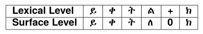
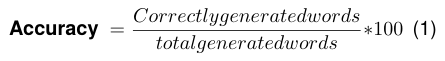
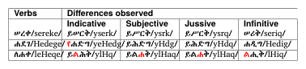
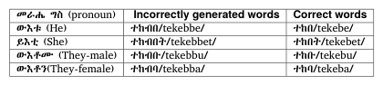
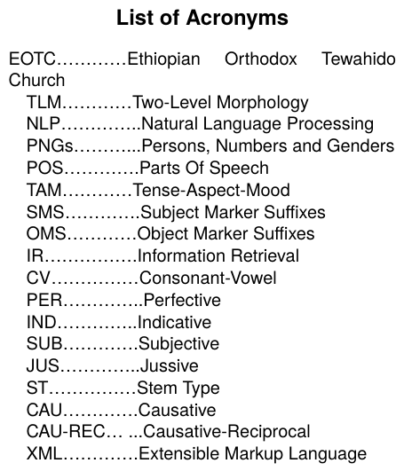
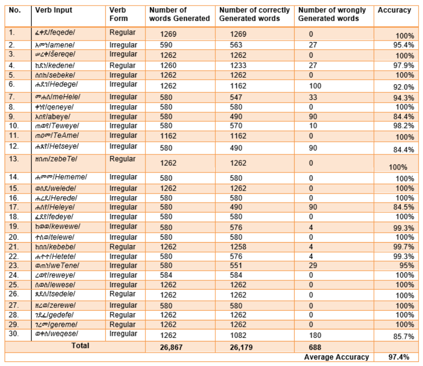
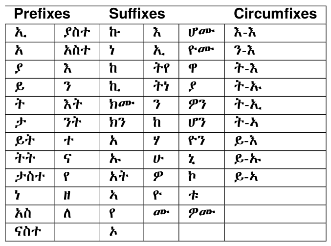

RAIL 2024Traduction automatique
Synthétiseur Morphologique pour la Langue Ge'ez : Répondre à la Complexité Morphologique et aux Limites des Ressources
Traduction automatique, non relue par un humain. L'article original est la version de référence ; les phrases soulignées sont celles dont les contrôles automatiques n'étaient pas sûrs.
Proceedings of the Fifth Workshop on Resources for African Indigenous Languages @ LREC-COLING 2024.
Traduction par Ernst van Gassen (Arktos AI Lab), sous licence CC BY-NC 4.0 comme l'original. Réutilisation permise avec attribution, à usage non commercial uniquement. Les auteurs originaux n'ont pas relu ni approuvé cette traduction.
Texte brut réutilisable, avec sa licence : Français · LICENCE
Affiliations
Gebrearegawi Gebremariam †, Hailay Teklehaymanot ∗
Gebregewergs Mezgebe†
†Axum University, Institute of Technology, Department of IT, Ethiopia
∗L3S Research Center, Leibniz University Hannover,Germany
teklehaymanot @l3s.de
Adresses e-mail retirées pour la protection de la vie privée. Elles figurent dans le PDF original.
Résumé
Ge'ez est une ancienne langue sémitique réputée pour son alphabet unique. Il sert de script pour de nombreuses langues, dont le tigrigna et l'amharique, et a joué un rôle pivot dans le développement culturel et religieux de l'Éthiopie durant l'ère du royaume d'Aksoum. Ge'ez reste une langue liturgique importante en Éthiopie et en Érythrée, avec une grande partie de la documentation d'identité nationale enregistrée dans Ge'ez. Ces documents écrits sont des sources primaires inestimables pour l'étude de la philosophie, de la créativité, de la connaissance et de la civilisation éthiopiennes et érythréennes. Le guèze possède une structure morphologique complexe avec une morphologie d'inflexion et de dérivation riche, et aucun NLP utilisable n'a été développé et publié jusqu'à présent en raison de la rareté des données linguistiques annotées, des corpus, des jeux de données étiquetés et des lexiques. Par conséquent, nous avons proposé une synthèse morphologique du guèze basée sur des règles pour générer des mots de surface à partir de mots racines selon les structures morphologiques de la langue. Par conséquent, nous avons proposé un synthétiseur morphologique automatique pour Ge'ez en utilisant TLM. Nous avons utilisé 1 102 verbes échantillons, représentant toutes les structures morphologiques verbales, pour tester et évaluer le système. Enfin, nous obtenons une performance de 97,4 %. Ce résultat surpasse le modèle de base, suggérant que d'autres chercheurs construisent un système complet en tenant compte des variations morphologiques de la langue.
Mots-clés
Guèze, TAL, morphologie, synthétiseur morphologique, à base de règles
1. Introduction
Le langage est l'un des aspects les plus importants de nos vies, car il nous permet de préserver les informations et de les transmettre oralement ou par écrit de génération en génération (Allen, 1995).
Le guèze est une ancienne langue sémitique dotée d'un alphabet unique ("ኣ፣ በ፣ ገ፣ ደ") (Adege et Mannie, 2017; Siferew, 2013). Cette langue a joué un rôle central dans le développement culturel et religieux de l'Éthiopie et de l'Érythrée à l'époque du royaume aksoumite. Sa riche tradition littéraire et son influence dans la diffusion du christianisme à travers la région sont remarquables. Bien qu'il ne soit plus parlé familièrement après le XIIIe siècle, Ge'ez reste significatif en tant que langue liturgique pour divers groupes religieux. Les chercheurs et les linguistes sont attirés par Ge'ez pour son aperçu de l'évolution historique des langues sémitiques et de leurs liens avec des langues telles que l'hébreu, l'arabe et la langue éthiopienne et érythréenne moderne (Dillmann et Bezold, 2003; Desta, 2010; Abate, 2014).
En plus d'être la langue liturgique pour divers groupes religieux en Éthiopie et en Érythrée, Ge'ez reste une langue d'écriture importante pour les livres religieux, historiques et littéraires de l'histoire de l'Éthiopie (Belcher, 2012; Scelta et Quezzaire-Belle, 2001). Ces ressources écrites peuvent être des sources primaires pour étudier la philosophie éthiopienne et érythréenne, la créativité, la connaissance et la civilisation. (Abate, 2014).
Par conséquent, la préservation de la langue ge'ez devient impérative pour sauvegarder le patrimoine culturel et historique de l'Éthiopie et de l'Érythrée. La langue étant intimement liée aux pratiques religieuses et à la littérature, sa préservation assure la continuité des traditions et des identités entre les générations. En outre, la préservation de la langue Ge'ez est cruciale pour maintenir les pratiques religieuses et les traditions littéraires, honorer la diversité linguistique et l'identité, contribuer à la compréhension de l'évolution des langues sémitiques et favoriser la fierté culturelle et la continuité entre les générations en Éthiopie et en Érythrée (Desta, 2010).
Cependant, la recherche pour cette langue n'a commencé que récemment, et aucune technologie utilisable n'a été développée et publiée jusqu'à présent pour le Ge'ez parce que peu de considération a été accordée à la langue, même si elle est si importante. Pour cette raison, Ge'ez est toujours une langue à faibles ressources et en voie de disparition (Eiselen et Gaustad, 2023; Haroutunian, 2022). Dans la documentation des langues en voie de disparition ou la reconstruction des langues historiques, la compréhension de leur structure morphologique est essentielle pour représenter avec précision et préserver les systèmes linguistiques (Bisang et al., 2006). Pour les langues morphologiquement riches comme le guèze, il est essentiel de développer un système capable de générer toutes les formes de surface des mots à partir des mots racines, car cela peut servir d'entrée pour de nombreux autres systèmes de TAL, y compris les systèmes de RI, la vérification de l'orthographe et de la grammaire, la prédiction de texte, le développement de dictionnaires, l'étiquetage POS, la traduction automatique, l'IA conversationnelle et d'autres systèmes basés sur l'IA. Mais, il est difficile de développer des systèmes basés sur l'IA, surtout pour les langues peu dotées en ressources comme le guèze, etc (Eiselen et Gaustad, 2023; Haroutunian, 2022; Gasser, 2012; Saranya, 2008; Scelta et Quezzaire-Belle, 2001; Sunil et al., 2012; Wintner, 2014).
Par exemple, considérez les résultats de la recherche dans le tableau 1 pour évaluer les limites du système RI dans la variation des mots en ge'ez.

Tableau 1: requêtes Ge'ez et leurs résultats à partir du moteur de recherche Google
Comme le montre le tableau 1, les résultats obtenus dans chaque requête sont différents, même si les requêtes sont liées et générées à partir du verbe 'ረጠነ/reTene/'. Dans ce cas, la requête doit être donnée dans toutes les variantes des formes de mots ; sinon, le système ne parviendra pas à récupérer les informations liées. Cependant, il est peu pratique de rechercher tous les mots de variante (Hailay, 2013). Pour améliorer l'efficacité des systèmes de RI, il est important de créer une forte relation entre les radicaux et leurs formes de mots variantes. Ainsi, il est important de développer un synthétiseur morphologique de Ge'ez et de l'intégrer aux systèmes IR pour obtenir un système IR efficace.
Par conséquent, nous avons proposé un synthétiseur morphologique de Ge'ez basé sur des règles qui peut jouer un rôle crucial dans la génération de mots de surface à partir des mots racines selon les structures morphologiques de la langue. Cette étude est la première tentative de développement de synthétiseurs morphologiques pour la langue Ge'ez, bien que des synthétiseurs morphologiques pour d'autres langues aient été développés et soient disponibles pour un usage plus large, comme indiqué ci-dessous dans la section des travaux connexes. En conséquence, notre travail a apporté les contributions fondamentales suivantes à la communauté scientifique :
- i. Nous avons conçu un algorithme basé sur les règles morphologiques de la langue pour illustrer la génération de caractéristiques TAM et PNG. Nous avons tenté de créer des mots de surface à partir des lexiques. Le générateur utilise les alphabets Unicode ge'ez sans les translittérer en alphabets latins. Cela le rend facile à utiliser, surtout pour les apprenants et les chercheurs du gé'ez.
- ii. Nous avons préparé les premiers ensembles de données disponibles publiquement pour les synthétiseurs morphologiques Ge'ez. Un autre chercheur peut l'utiliser.
- iii. Notre système donne des significations en amharique et en anglais pour la forme verbale parfaite. Par conséquent, cela peut initier le développement des projets de dictionnaires supérieurs suivants Ge'ez-Amharic, Ge'ez-Tigrinya ou Ge'ez-autres langues.
2. Travaux connexes
L'un des domaines de recherche les plus populaires en TAL est l'étude des synthétiseurs morphologiques. Plusieurs projets de recherche ont été menés dans ce domaine pour diverses langues internationales en utilisant différentes approches (Abeshu, 2013; Koskenniemi, 1983). Examinons quelques travaux connexes.
ENGLEX a été développé pour générer et reconnaître des mots anglais en utilisant TLM dans PC-KIMMO. Il comporte trois composants essentiels, dont un ensemble de règles phonologiques (ou orthographiques), des lexiques (radicaux et affixes) et des composants grammaticaux du mot. Le générateur accepte des formes lexicales telles que spy + s en entrée et retourne le mot de surface spies. Le code source en ligne est disponible ici.
Jabalín a été développé pour à la fois analyser et générer des formes verbales arabes en utilisant Python. Ils ont créé un lexique de 15 453 entrées. Cela a été conçu en utilisant une approche basée sur des règles appelée morphologie de motif racinaire. Le générateur morphologique accepte les lemmes de verbes pour produire des formes de mots infléchies et a atteint une précision de 99,52% pour les mots corrects (González Martínez et al., 2013).
À l’aide d’une approche paradigmatique, l’analyseur morphologique et le synthétiseur de verbes malayalam ont également été développés par (Saranya, 2008). Cela aide à créer un système de traduction automatique anglais-Malayalam.
Pymorphy2 a été développé pour l’analyse morphologique et la génération de langues russe et ukrainienne (Korobov, 2015). Le système utilisait des lexiques volumineux et efficacement encodés construits à partir de données Open-Corpora et LanguageTool. Un ensemble de règles motivées linguistiquement a été développé pour permettre l'analyse morphologique et la génération de mots hors vocabulaire observés dans des documents du monde réel.
TelMore a été développé par (Ganapathiraju et Levin, 2006) pour gérer la génération morphologique des noms et des verbes en Telugu. Le prototype a été conçu sur la base d'automates à états finis. TelMore accepte la forme infinitive pour les types de verbes et génère les temps présents, passés et futurs, les formes affirmatives, négatives, impératives et prohibitives pour tous les genres et tous les nombres. De plus, (Dokkara et al., 2017) a également développé un générateur morphologique pour cette langue. Son modèle computationnel a été développé sur la base de techniques à états finis. Le système a été évalué pour un total de 503 verbes. Parmi ces verbes, 418 mots étaient corrects, et 85 mots étaient incorrects.
(Goyal et Lehal, 2008) ont développé l'analyseur morphologique et le générateur pour le hindi en utilisant l'approche paradigmatique. Ce système a été développé dans le cadre du système de traduction automatique de l'hindi au punjabi. (Gasser, 2012) a développé un système qui génère des mots pour l'amharique, l'oromo et le tigrigna à partir de la racine et des affixes donnés. Cela a été développé sur la base du concept de technologie à états finis. Le système a produit des résultats à 96% d'exactitude (Gasser, 2012).
Un synthétiseur morphologique pour l'amharique a été développé par (Lisanu, 2002) en utilisant des combinaisons d'approches à base de règles et de réseaux de neurones artificiels. Cependant, son étude se limitait aux formes verbales parfaites de l'amharique. Certaines des formes de mots générées pourraient être plus significatives. De plus, ce modèle utilisait une translittération de l'écriture amharique en latin avant toute synthèse. Le système ne permet pas la génération d'autres racines qui ne sont pas enregistrées dans sa base de données. D'autre part, les mots sont générés en sortie en donnant la racine et le suffixe comme entrées. Cela peut limiter le nombre de mots que le modèle peut produire par rapport aux mots développés par les experts en langues. (Lisanu, 2002).
(Abeshu, 2013) a développé un synthétiseur morphologique automatique pour Afan Oromoo en utilisant une combinaison d'approches CV et TLM et a obtenu une performance de 96,28 % pour les verbes et 97,46 % pour les noms. L'étude a indiqué que le développement d'un synthétiseur automatique à part entière pour Afan Oromoo en utilisant des approches basées sur des règles peut donner un résultat exceptionnel. Et il est facile d'étendre le système à d'autres parties du discours avec un effort minimal.
Les synthétiseurs morphologiques examinés sont spécifiques à leur langue correspondante et ne peuvent pas gérer les caractéristiques morphologiques de Ge'ez parce que Ge'ez diffère de ces langues. À notre connaissance, aucune recherche n'a été menée pour développer un générateur morphologique automatique pour la langue guèze. Ainsi, nous avons prévu de créer un modèle de synthétiseur morphologique qui peut générer la morphologie dérivationnelle et flexionnelle des verbes de la langue ge'ez.
3. Morphologie du guèze
La langue ge'ez a une structure morphologique complexe parce qu'un seul mot peut apparaître sous de nombreuses formes différentes et véhiculer différentes significations en ajoutant des affixes ou en changeant les modèles phonologiques du mot (Adege et Mannie, 2017). En particulier, les verbes ont une structure plus complexe que les autres POS dans Ge'ez. Ainsi, les verbes ge'ez sont classés en six classes principales dans leurs formes étiquetées comme perfectif, indicatif, infinitif, subjonctif, jussif, et les formes verbales gérundives. Chaque forme verbale possède cinq classes de radicaux, et chaque radical verbal s'infléchira en ajoutant des affixes pour créer différentes formes de mots (Desta, 2010). Généralement, il y a trois phases pour créer des formes de mots variantes en ge'ez, comme défini dans (Dillmann et Bezold, 2003). Ceux-ci sont donnés ci-dessous, comme illustré à la figure 1:
Phase I : Formation de la racine
Phase II: formation du TAM
Phase III : Formation des PNG
En Phase I, la déclaration des formes de mots est effectuée en utilisant le Temps-Mode comme lignes et les cinq radicaux comme colonnes.
Dans la phase II, chaque forme verbale de surface obtenue à partir de la phase I est en outre déclarée en utilisant les dix pronoms subjectifs en ajoutant le suffixe du marqueur de sujet.
En Phase III, les déclarations des formes de mots utilisant les dix suffixes de l'Object Maker pour chacun des mots obtenus en Phase II auront lieu.
Ainsi, deux règles de suffixation des verbes gouvernent le processus de concaténation des morphèmes pour produire les formes de surface des verbes :
Stem + subject-marker suffix = surface word (only with SMS)
Stem + subject-marker suffix + object-indicator suffix = surface word (with both SMS and OMS)
Ainsi, nous pouvons avoir deux formes de verbe, l'une avec uniquement le marqueur de sujet direct et l'autre avec les deux suffixes de marqueur de sujet et d'objet, comme indiqué ci-dessous :
ቀተል (stem) + ክሙ (subject marker suffix) = ቀተልክሙ - you killed. (Surface Form).
ቀተል (stem) + ክሙ (object marker suffix) = ቀተለክሙ - he killed you (Surface Form).
ቀተል (stem) + ክሙ (SMS) + ኒ (OMS) = ቀተልክሙኒ - you killed me (Surface Form).
Dans ce cas, le suffixe marqueur de sujet /-ክሙ/ indique que le sujet est "vous (2 ppm)", tandis que le marqueur d'objet /-ኒ/ indique l'objet "moi". Ainsi, le verbe /ቀተልክሙኒ/ indique à la fois le sujet et l'objet du verbe. Par conséquent, un seul verbe peut être une phrase dans Ge'ez parce qu'il a à la fois des suffixes d'indicateur de sujet et d'objet.
4. Méthodologie de l'étude
Nous avons passé en revue plusieurs livres, rapports de recherche, revues, articles et manuels d'utilisation pour comprendre la structure morphologique des verbes Ge'ez et connaître les différentes techniques de conception des synthétiseurs morphologiques. En outre, des discussions continues ont été menées avec les experts de Ge'ez pour mieux comprendre la structure morphologique de la langue et obtenir des idées précieuses pour l'étude.

Figure 1: Phases de la formation morphologique des mots en ge'ez
4.1. Collecte des données
Les données manuellement annotées dans les lexiques aident à tester le synthétiseur morphologique. Comme les dictionnaires et les listes de mots lisibles par machine ou un corpus en ligne pour Ge'ez n'étaient pas disponibles, le travail de compilation des lexiques a commencé à partir de zéro. Par conséquent, nous avons compilé des exemples de verbes représentatifs qui caractérisent toutes les variations de verbes pour tester et évaluer les performances des systèmes en consultant des experts de la langue. Ces verbes sont recueillis à partir de différents livres, comme la Bible, መጽሐፈ ግስ/Ge'ez Grammar Book/, et de lsanate siem (ልሳናተ ሴም) (Zeradawit, 2017). Par conséquent, le lexique linguistique préparé pour cette étude se compose de 1102 verbes réguliers et irréguliers. Les affixes qui peuvent être concaténés avec les verbes sont également compilés dans les lexiques.
4.2. Conception
Comme le définissent (Pulman et al., 1988), il est obligatoire de prendre en compte au moins les exigences de conception de base suivantes pour développer un synthétiseur morphologique d'une langue :
- Lexiques:
Le lexique décrit la liste de tous les lemmes et de toutes leurs formes. C’est le cœur de tout système de traitement du langage naturel, même si le format diffère selon leurs besoins. Par conséquent, les lexiques nécessaires à notre étude incluent les radicaux, les affixes et les alphabets guèze. Voyons chacun de ces lexiques en détail. i. Radicaux : Dans notre étude, les entrées de radical sont des formes verbales infinitives comme ቀቲል /tuer/, ሐዊር /marcher/, ሰጊድ /se prosterner/, ፈቂድ /permettre/, ሐዪው /saliver/, etc. À partir de ces entrées lexicales, le système génère des mots infléchis pour tous les genres et tous les nombres en les combinant avec les affixes correspondantes selon l'ensemble des règles de la langue. La raison pour laquelle nous voulons utiliser la forme du verbe à l'infinitif comme entrée au lieu du mot racine /ጥሬ ዘር/ est de supprimer l'ambiguïté qui peut être créée lorsque le prototype distingue la catégorie du verbe de l'entrée.
ii. Affixes: Comme défini par (Abebe, 2010), les affixes portent différents types d'informations syntaxiques et sémantiques, aidant à construire divers mots. Les affixes se combinent avec les radicaux pour générer divers mots en fonction de l'ensemble des règles. Ici, les préfixes marqueurs de radical verbal et les préfixes marqueurs de personne sont d'abord combinés avec le radical d'entrée pour générer divers radicaux de mots (Abebe, 2010). Ensuite, les suffixes SMS et OMS suivent dans l'ordre. Par exemple, considérons la formation de ይቀትለከ /Il te tuera/ en utilisant TLM dans le Tableau 2.
Comme indiqué dans le Tableau 2, pour chaque radical à combiner avec des affixes, un analyseur doit examiner le type de radical et les affixes qui peuvent se concaténer correctement pour créer des mots de surface valides. Par conséquent, un ensemble de règles a été établi pour gérer de telles exigences.
iii. Alphabets gé'ez : Comme décrit par (Koskenniemi, 1983), les mots à la fois lexicaux et de niveau de surface dans le modèle à deux niveaux sont des chaînes extraites des alphabets de la langue. Les chaînes de niveau lexical peuvent contenir certains caractères qui peuvent ne pas apparaître dans les chaînes de niveau de surface. En conséquence, les mots Ge'ez sont construits par la concaténation significative des alphabets Ge'ez. Les alphabets de la langue ge'ez comprennent tous les caractères commençant par ሀ/he/ jusqu'à ፈ/fe/ et les quatre autres alphabets composés complexes. Toutes les alternances de caractères dans les chaînes lexicales lors des formations de mots de surface sont récupérées à partir de ces alphabets. La mise en œuvre de ces modifications est gérée en fonction des règles du prototype du système. Les règles à deux niveaux sont utilisées ici pour spécifier les différences admissibles entre les représentations lexicales et de surface des mots.
- Morphotactics :
La morphotactique est le modèle ou la règle d'ordre des morphèmes qui explique quelles classes de morphèmes peuvent suivre d'autres séquences de morphèmes à l'intérieur d'un mot. Les verbes en guèze ont leurs propres règles pour l'ordre des morphèmes. L'ordre des morphèmes dans la formation des mots des verbes ge'ez est le suivant:
[Préfixe] + [Circumfixes de préfixe] + [radical] + [Circumfixes de suffixe] + [SMS] + [OMS]
- Règles Orthographiques :

En tenant compte des exigences de conception ci-dessus, nous avons conçu l'organigramme général du système comme le montre la figure 2: Comme nous le voyons dans l'organigramme de la figure 2, la conception du synthétiseur morphologique a les composantes suivantes:
A. Classifieur de radicaux : identifie la catégorie verbale du radical. La classification est effectuée en fonction du nombre de têtes et de troupes de verbes. Ce composant vérifie également si la racine du verbe est régulière ou non. Ici, si le verbe d'entrée contient l'un des alphabets gutturaux (à savoir ሀ/he/, ሐ/He/, ኀ/H/, አ/a/ et ዐ/A/ soit à leurs positions initiales ou intermédiaires) ou des alphabets semi-vocaux (à savoir የ/ye/ et ወ/we/) à n'importe quelle position du verbe, il est irrégulier, sinon il est un verbe régulier.
B. Formation des radicaux : Ce sous-composant génère les différents radicaux dérivés pour l'entrée lexical.
C. Constructeur de signatures : liste l'ensemble des suffixes valides pour chaque radical généré car chaque radical créé a des affixes correspondants spécifiques au radical lors de la formation valide de mots de surface. Pour établir une concaténation valide des radicaux avec les affixes, un mécanisme de correspondance de motifs est utilisé, qui est basé sur la notion de mise en correspondance des radicaux avec leurs affixes valides. Par exemple, le mot 'ይቀትል'/yqetl/ a un affixe valide 'ዎ'/wo/ pour créer une forme de mot valide. Mais, ce mot ne peut pas être combiné avec l'affixe 'ክዎ'/kwo/ parce que la combinaison du mot et de l'affixe ne peut pas créer des formes de mots valides.
D. Gestionnaire de changement de frontière : Ce sous-composant traite les motifs de frontière apparaissant lors de la concaténation des radicaux et des affixes en fonction des règles établies dans la base de connaissances. Ces changements peuvent être spécifiques à chaque concaténation de morphèmes, même si ces morphèmes sont de la même manière. Les effets d'assimilation se produisent principalement à la frontière des morphèmes lorsque les suffixes ከ /ke/, ኩ /ku/, ኪ /ki/, ክን /kn/ ou ክሙ /kmu/ sont ajoutés à la fin d'un verbe qui se termine par l'un des alphabets glottaux, à savoir ቀ /QE/, ከ /ke/, ou ገ /Ge/ (Lambdin, 1978). Par exemple, observez la concaténation des morphèmes ሐደገ avec ክሙ:
ሐደገ + ክሙ -> ሐደግሙ (le caractère ገ dans ሐደገ change en ግ et le caractère ክ est omis du morphème ክሙ)
E. Synthétiseur : Ce sous-composant génère toutes les formes de mots de surface possibles en concaténant le radical avec la liste sélectionnée d'affixes en utilisant la méthode TLM de génération de mots. Par exemple, considérons la génération du mot Ge'ez suivant par TLM dans le Tableau 2 :

Tableau 2: Génération de mots de surface en utilisant TLM
Les lignes du tableau 2 représentent les mappages à deux niveaux effectués pendant le processus de formation des mots.
F. Niveau de surface : Enfin, les sorties du synthétiseur sont produites.
Vous trouverez ci-dessous notre algorithme concis pour produire des formes de mots basées sur des lexiques d'entrée:

5. Expérimentation et évaluation
5.1. Approche développementale
Plusieurs approches auraient pu être appliquées au développement de systèmes de génération morphologique pour différentes langues. Comme indiqué par (Kazakov et Manandhar, 2001), ces approches peuvent être catégorisées comme des approches fondées sur des règles et des approches fondées sur des corpus. Cette étude a appliqué l'approche basée sur des règles appelée le modèle à deux niveaux (TLM) de la morphologie pour développer le prototype. Le TLM est utilisé pour traiter les processus phonologiques et morphophonémiques (y compris les changements d'assimilation) impliqués dans la formation des mots (Gasser, 2011; Koskenniemi, 1984). Principalement, nous avons sélectionné l'approche TLM pour mapper les entrées lexicales aux formes de surface des verbes. Nous avons utilisé l'approche à base de règles pour développer le synthétiseur morphologique de la langue car cette approche a un processus de développement plus rapide avec une meilleure exactitude, est plus simple à ajuster, et est plus accessible pour formuler des règles selon les règles de la langue (Beesley and Karttunen; Shaalan et al., 2007). De plus, l'approche basée sur des règles est pratique pour les langues avec moins de ressources, comme Ge'ez, qui souffre de la disponibilité des corpus et de la rareté des données (Shaalan et al., 2010). Par conséquent, nous avons préféré l'approche basée sur des règles, dans laquelle un mot particulier est donné comme entrée au synthétiseur morphologique, et si ce morphème ou mot racine correspondant est valide, alors le système produira des formes de mots de surface.

Figure 2 : Diagramme de flux du synthétiseur morphologique Ge'ez
5.2. Procédures de test
L'évaluation systématique du système est complexe puisqu'aucun mot Ge'ez recueilli n'est actuellement disponible à cette fin. Ainsi, pour tester l’efficacité du système développé, nous avons utilisé les échantillons de verbes collectés. Les procédures d'essai sont les suivantes :
1.Au cours de la phase initiale, nous avons évalué le système en entrant une racine de test extraite d'échantillons de verbes dans le lexique, en générant des mots et en les comparant avec leurs formes de mots attendues. Cette évaluation a été menée de façon itérative tout au long du développement du synthétiseur morphologique afin d'améliorer ses performances. Toute erreur identifiée lors de ce test, principalement liée à des règles manquantes, a été corrigée en conséquence. Des itérations ultérieures de cet essai ont été effectuées jusqu'à ce que des résultats satisfaisants soient obtenus.
2. Ensuite, la fonctionnalité du système finalisé a été testée en entrant des verbes échantillons (y compris ceux avec des alphabets glottaux ou semi-vocaliques à différentes positions) sélectionnés par des linguistes.
5.3. Procédures d'évaluation
Enfin, nous avons évalué en prenant des verbes réguliers et irréguliers parmi les verbes échantillons sélectionnés. Pour évaluer le système, nous avons utilisé deux options :
1.Évaluation manuelle En utilisant l'approche de comptage des erreurs, les experts linguistiques ont évalué manuellement les mots générés pour évaluer leur exactitude et leur qualité. La précision du système est ensuite calculée comme le nombre de mots générés correctement divisé par le nombre total de mots générés par le système multiplié par 100 %.
2. Évaluation automatique Nous évaluons la performance du système en utilisant des critères et des métriques prédéfinis sans intervention humaine, une méthode similaire à celle décrite par (González Martínez et al., 2013). Par la suite, la précision obtenue à partir de chaque expérience est calculée à l'aide de la formule suivante:

6. Résultats expérimentaux
L'évaluation de la précision du système développé impliquait l'introduction de jeux de données échantillons. 7 577 mots ont été générés à partir de verbes réguliers, et 19 290 mots ont été générés à partir de verbes irréguliers. Parmi ceux-ci, 668 erreurs ont été identifiées (8 à partir de verbes réguliers et 661 à partir de verbes irréguliers). Les taux de précision étaient de 99,6 % pour les verbes réguliers et de 96,6 % pour les verbes irréguliers. Il en résulte une précision moyenne globale de 97,4 %. Ce résultat dépasse le niveau de référence (Abeshu, 2013). Le pourcentage de mots avec des erreurs était de 2,6%. Ce résultat prometteur soutient des recherches supplémentaires sur la langue. Les résultats expérimentaux sont trouvés et référencés dans la section Annexe.
7. Discussion
Le système produit constamment des mots exacts, bien qu'avec des erreurs occasionnelles. Comme le détaille l'Appendice I, les verbes irréguliers ont une performance inférieure à celle des verbes réguliers, principalement en raison de leur flexibilité inhérente dans les processus de formation des mots. La prédominance des verbes irréguliers dans l'ensemble de données d'évaluation contribue à la diminution observée de la précision. Si une proportion plus significative de verbes réguliers était incluse dans l'évaluation, on s'attendrait à ce que la précision dépasse 97,4 %, étant donné le taux de précision plus élevé de 99,6 % observé pour les mots générés à partir de verbes réguliers.
7.1 Facteurs conduisant à des performances élevées.
Malgré quelques erreurs rencontrées, le synthétiseur démontre des performances remarquablement élevées. Cette réussite peut être attribuée à plusieurs facteurs :
1. Créer des radicaux corrects Des radicaux générés correctement produisent des mots de surface corrects si les changements de frontière survenant lors des concaténations de radicaux et d'affixes sont gérés correctement. Si les radicaux racines sont développés parfaitement, alors les mots générés à partir de ces radicaux sont corrects. Ainsi, la performance atteinte est élevée parce que la plupart des radicaux causés sont justes, et les changements de frontière sont gérés correctement.
2. Gestion des règles lorsque les morphèmes sont concaténés les uns avec les autres Des mots corrects sont générés lorsque les radicaux et les affixes sont concaténés correctement. Pour cette raison, la sélection des affixes pour le radical donné a été gérée correctement. Par conséquent, gérer correctement l'ensemble des règles de formation des mots générera des mots valides.
3. Règles de gestion pour la formation de mots irréguliers La langue guèze possède de nombreux verbes irréguliers. Les verbes irréguliers sont ceux qui ont un léger changement dans leur structure morphologique par rapport aux verbes réguliers. Cela se produit principalement en raison de la présence de l'une des lettres gutturales, à savoir ሀ/he/, ሐ/He/, ኀ/H/, አ/a/ et ዐ/A/ soit à leur début, soit à leur position médiane, ou de la présence des lettres semi-voyelles, à savoir የ/ye/ et ወ/we/ à l'une ou l'autre des positions des verbes. Les verbes irréguliers ont diverses règles pour générer les formes de mots correctes. Ces règles présentent de légères différences par rapport aux règles régulières de formation des mots. La gestion de ces règles de formation des mots permet d'obtenir une meilleure précision. En conséquence, nous avons essayé de gérer les règles de formation des mots autant que possible.
7.2. Analyse des erreurs
Certains mots sont générés incorrectement. Ces erreurs peuvent être attribuées aux facteurs suivants :
1. Erreurs dues aux caractères exceptionnels existant dans le verbe Certains verbes ont des caractéristiques particulières, même si ces verbes semblent avoir la même forme que le verbe de tête. Par exemple, le système a été conçu pour traiter les verbes qui se terminent par les caractères ቀ/qe/, ከ/ke/, et ገ/ge/ parce qu'il est supposé que ces verbes ont les mêmes caractéristiques morphologiques que les autres verbes. Cependant, cela peut ne pas toujours être vrai si nous considérons la structure morphologique des verbes ሠረቀ/šereqe/, ሐደገ/Hedege/, et ለሐቀ/leHeqe/. Ces verbes présentent des différences dues à l'existence de caractères gutturaux ou semi-vocaux, ou les deux, comme le montre le tableau 3.

Tableau 3 : Erreurs causées par des caractères exceptionnels
Comme nous le voyons dans le tableau 3, les lettres écrites en rouge dans les mots font une différence dans chaque processus de formation des mots, même si ces mots sont classés dans la même catégorie de verbes.
- Erreurs générées lors de la concaténation de mots exceptionnels avec des affixes
Certains des mots générés semblent être corrects à la fois grammaticalement et sémantiquement, mais ce ne sont pas des mots corrects. Par exemple, lorsque les morphèmes ከረም/kerem/ et ነ/ne/ sont concaténés, ils produisent le mot ከረምነ/keremne/ qui est le mot correct. De la même manière, lorsque les morphèmes አመን/amen/ + ነ/ne/, cela donne አመንነ/ amenne/. Cependant, አመንነ/ amenne/ n’est pas le mot correct. Le mot correct est አመነ/amene/. Ainsi, ces mots ont des formes différentes même s'ils appartiennent au même POS et au même nombre.
3.Erreurs causées par la richesse morphologique et la nature variée de la langue
Ce type d'erreur se produit lorsque l'on teste avec des verbes qui semblent avoir la même structure que d'autres verbes dans la nature. Mais leur production réelle montre différentes formes de mots. Par exemple, lorsque nous prenons les verbes ወለደ/welede/ et ወቀሰ/weqese/, nous supposons que ces verbes ont la même structure lors de la conception du prototype. Mais ces verbes présentent des différences dans leur structure réelle de formation de mots.
4. Erreurs causées par l'absence de certaines règles La formation des différentes formes de mots a un ensemble de règles. Manquer l'une de ces règles génère des formes de mots invalides. Les mots incorrects dans le tableau 4 sont générés parce que certaines règles et leurs formes correctes sont manquantes.

Tableau 4 : Erreurs causées par des règles manquantes
8. Conclusion et travaux futurs
L'étude a opté pour l'approche TLM basée sur des règles pour développer un synthétiseur morphologique automatique en raison de sa simplicité, de son adéquation et de son efficacité, surtout pour les langues avec une disponibilité limitée de corpus. Un ensemble de règles a été méticuleusement conçu sur la base des connaissances expertes de la structure morphologique de la langue, formant la base du développement de l'algorithme à partir de zéro pour gérer les processus de formation des mots. Malgré la rigueur des règles de synthèse morphologique, certaines inexactitudes ont persisté dans la génération de mots, provenant principalement de la formation de radicaux invalides, notamment pour les verbes irréguliers contenant des alphabets gutturaux et semi-voyelles. Néanmoins, le prototype du synthétiseur a montré des performances prometteuses, avec une précision globale de 97,4 %, indiquant des perspectives encourageantes pour de plus amples recherches en linguistique guèze. Les commentaires des linguistes impliqués dans l'évaluation du système ont souligné l'importance de développer une version complète du système pour améliorer l'utilisation et la préservation de Ge'ez au sein de la société. Des recommandations ont été faites pour que les futurs chercheurs abordent et corrigent les erreurs limitant les performances de l'étude et avancent vers un système pleinement fonctionnel. Les défis rencontrés au cours de l'étude comprenaient: Un manque d'experts linguistiques Ge'ez. Absence de références et de dictionnaires standardisés. Pénurie de lexiques en langue Ge'ez compilés. En outre, la complexité et la nature agglutinante de la morphologie de Ge'ez ont posé des obstacles supplémentaires, contribuant à son vocabulaire étendu.

Notes
1 http://downloads.sil.org/legacy/pckimmo/engl20b5.zip
Références
Yitayal Abate. 2014. Morphological analysis of ge'ez verbs using memory based learning.
A. Abebe. 2010. Automatic morphological synthesizer for afaan oromoo. A thesis Submitted to School of Graduate Studies of addis ababa University in Partial fulfillment for degree masters of Science in Computer Science.
Abebe Abeshu. 2013. Analysis of rule based approach for afan oromo automatic morphological synthesizer. Science, Technology and Arts Research Journal, 2(4):94-97.
Abebe Belay Adege and Yibeltal Chanie Mannie. 2017. Designing a Stemmer for Ge'ez Text Using Rule based Approach. LAP LAMBERT Academic Publishing.
James Allen. 1995. Natural language understanding. Benjamin-Cummings Publishing Co., Inc.
Kenneth R Beesley and Lauri Karttunen. Finite-state morphology: Xerox tools and techniques. CSLI, Stanford, pages 359-375.
Wendy Laura Belcher. 2012. Abyssinia's Samuel Johnson: Ethiopian Thought in the Making of an English Author. OUP USA.
Walter Bisang, Hans Henrich Hock, Werner Winter, Jost Gippert, Nikolaus P Himmelmann, and Ulrike Mosel. 2006. Essentials of language documentation. Mouton de Gruyter.
Berihu Weldegiorgis Desta. 2010. Design and Implementation of Automatic Morphological Analyzer for Ge'ez Verbs. Ph.D. thesis, Addis Ababa University.
August Dillmann and Carl Bezold. 2003. Ethiopic grammar. Wipf and Stock Publishers.
Sasi Raja Sekhar Dokkara, Suresh Varma Penumathsa, and Somayajulu G Sripada. 2017. Verb morphological generator for telugu. Indian Journal of Science and Technology, 10:13.
Roald Eiselen and Tanja Gaustad. 2023. Deep learning and low-resource languages: How much data is enough? a case study of three linguistically distinct south african languages. In Proceedings of the Fourth workshop on Resources for African Indigenous Languages (RAIL 2023), pages 42-53.
Fitsum Gaim, Wonsuk Yang, and Jong C Park. 2022. Geezswitch: Language identification in typologically related low-resourced east african languages. In Proceedings of the Thirteenth Language Resources and Evaluation Conference, pages 6578-6584.
Madhavi Ganapathiraju and Lori Levin. 2006. Telmore: Morphological generator for telugu nouns and verbs. In Proceedings of the Second International Conference on Digital Libraries.
Michael Gasser. 2011. Hornmorpho: a system for morphological processing of amharic, oromo, and tigrinya. In Conference on Human Language Technology for Development, Alexandria, Egypt, pages 94-99.
Michael Gasser. 2012. Hornmorpho 2.5 user's guide. Indiana University, Indiana.
Alicia González Martínez, Susana López Hervás, Doaa Samy, Carlos G Arques, and Antonio Moreno Sandoval. 2013. Jabalín: a comprehensive computational model of modern standard arabic verbal morphology based on traditional arabic prosody. In Systems and Frameworks for Computational Morphology: Third International Workshop, SFCM 2013, Berlin, Germany, September 6, 2013 Proceedings 3, pages 35-52. Springer.
Alicia González Martínez, Susana López Hervás, Doaa Samy, Carlos G. Arques, and Antonio Moreno Sandoval. 2013. Jabalín: A comprehensive computational model of modern standard arabic verbal morphology based on traditional arabic prosody. In Systems and Frameworks for Computational Morphology, pages 35-52, Berlin, Heidelberg. Springer Berlin Heidelberg.
Vishal Goyal and Gurpreet Singh Lehal. 2008. Hindi morphological analyzer and generator. In 2008 First International Conference on Emerging Trends in Engineering and Technology, pages 1156-1159. IEEE.
B. Hailay. 2013. Design and development of tigrigna search engine. A thesis Submitted to School of Graduate Studies of addis ababa University in Partial fulfillment for the Degree of Master of Science in Computer Science.
Levon Haroutunian. 2022. Ethical considerations for low-resourced machine translation. In Proceedings of the 60th Annual Meeting of the Association for Computational Linguistics: Student Research Workshop, pages 44-54.
Dimitar Kazakov and Suresh Manandhar. 2001. Unsupervised learning of word segmentation rules with genetic algorithms and inductive logic programming. Machine Learning, 43:121-162.
Mikhail Korobov. 2015. Morphological analyzer and generator for russian and ukrainian languages. In Analysis of Images, Social Networks and Texts: 4th International Conference, AIST 2015, Yekaterinburg, Russia, April 9-11, 2015, Revised Selected Papers 4, pages 320-332. Springer.
Kimmo Koskenniemi. 1983. Two-level morphology: A general computational model for word-form recognition and production. University of Helsinki. Department of General Linguistics.
Kimmo Koskenniemi. 1984. A general computational model for word-form recognition and production. In 10th International Conference on Computational Linguistics and 22nd Annual Meeting of the Association for Computational Linguistics. The Association for Computational Linguistics.
Thomas O. Lambdin. 1978. Introduction to Classical Ethiopic (Ge'ez). Harvard Semitic Studies - HSS 24.
K Lisanu. 2002. Design and development of automatic morphological synthesizer for Amharic perfective verb forms. Ph.D. thesis, Master's thesis, school of Information Studies for Africa, Addis Ababa.
Stephen G Pulman, Graham J RUSSELL, Graeme D Ritchie, and Alan W Black. 1988. Computational morphology of english.
SK Saranya. 2008. Morphological analyzer for malayalam verbs. Unpublished M. Tech Thesis, Amrita School of Engineering, Coimbatore.
Gabriella F Scelta and Pilar Quezzaire-Belle. 2001. The comparative origin and usage of the ge'ez writing system of ethiopia. Unpublished manuscript, Boston University, Boston. Retrieved July, 25:2009.
Khaled Shaalan, Azza Abdel Monem, and Ahmed Rafea. 2007. Arabic morphological generation from interlingua: A rule-based approach. In Intelligent Information Processing III: IFIP TC12 International Conference on Intelligent Information Processing (IIP 2006), September 20-23, Adelaide, Australia 3, pages 441-451. Springer.
Khaled Shaalan et al. 2010. Rule-based approach in arabic natural language processing. The International Journal on Information and Communication Technologies (IJICT), 3(3):11-19.
Muluken Andualem Siferew. 2013. Comparative classification of Ge'ez verbs in the three traditional schools of the Ethiopian Orthodox Church, volume 17 of Semitica et Semitohamitica Berolinensia. Shaker Verlag, Aachen.
R Sunil, Nimtha Manohar, V Jayan, and KG Sulochana. 2012. Morphological analysis and synthesis of verbs in malayalam. ICTAM-2012.
Shuly Wintner. 2014. Morphological processing of semitic languages. In Natural language processing of Semitic languages, pages 43-66. Springer.
A. Zeradawit. 2017. ልሳናተ ሴም, 1st edition. ትንሳኤ ማተምያ ድርጅት, Addis Ababa, Ethiopia.
Annexe I

Résultats obtenus par l'expérimentation du prototype du système

Quelques-unes des affixes de Ge'ez identifiées

Capture d'écran d'un échantillon de mots générés à partir du synthétiseur
English et Français
Morphological Synthesizer for Ge’ez Language: Addressing Morphological Complexity and Resource Limitations
Synthétiseur Morphologique pour la Langue Ge'ez : Répondre à la Complexité Morphologique et aux Limites des Ressources
Affiliations
Gebrearegawi Gebremariam †, Hailay Teklehaymanot ∗,
Gebregewergs Mezgebe†
†Axum University, Institute of Technology, Department of IT, Ethiopia
∗L3S Research Center, Leibniz University Hannover,Germany
,teklehaymanot @l3s.de
Affiliations
Gebrearegawi Gebremariam †, Hailay Teklehaymanot ∗,
Gebregewergs Mezgebe†
†Axum University, Institute of Technology, Department of IT, Ethiopia
∗L3S Research Center, Leibniz University Hannover,Germany
,teklehaymanot @l3s.de
Abstract
Résumé
Ge'ez is an ancient Semitic language renowned for its unique alphabet. It serves as the script for numerous languages, including Tigrinya and Amharic, and played a pivotal role in Ethiopia's cultural and religious development during the Aksumite kingdom era. Ge'ez remains significant as a liturgical language in Ethiopia and Eritrea, with much of the national identity documentation recorded in Ge'ez. These written materials are invaluable primary sources for studying Ethiopian and Eritrean philosophy, creativity, knowledge, and civilization. Ge'ez is a complex morphological structure with rich inflectional and derivational morphology, and no usable NLP has been developed and published until now due to the scarcity of annotated linguistic data, corpora, labeled datasets, and lexicons. Therefore, we proposed a rule-based Ge'ez morphological synthesis to generate surface words from root words according to the morphological structures of the language. Consequently, we proposed an automatic morphological synthesizer for Ge'ez using TLM. We used 1,102 sample verbs, representing all verb morphological structures, to test and evaluate the system. Finally, we get a performance of 97.4%. This result outperforms the baseline model, suggesting that other scholars build a comprehensive system considering morphological variations of the language.
Ge'ez est une ancienne langue sémitique réputée pour son alphabet unique. Il sert de script pour de nombreuses langues, dont le tigrigna et l'amharique, et a joué un rôle pivot dans le développement culturel et religieux de l'Éthiopie durant l'ère du royaume d'Aksoum. Ge'ez reste une langue liturgique importante en Éthiopie et en Érythrée, avec une grande partie de la documentation d'identité nationale enregistrée dans Ge'ez. Ces documents écrits sont des sources primaires inestimables pour l'étude de la philosophie, de la créativité, de la connaissance et de la civilisation éthiopiennes et érythréennes. Le guèze possède une structure morphologique complexe avec une morphologie d'inflexion et de dérivation riche, et aucun NLP utilisable n'a été développé et publié jusqu'à présent en raison de la rareté des données linguistiques annotées, des corpus, des jeux de données étiquetés et des lexiques. Par conséquent, nous avons proposé une synthèse morphologique du guèze basée sur des règles pour générer des mots de surface à partir de mots racines selon les structures morphologiques de la langue. Par conséquent, nous avons proposé un synthétiseur morphologique automatique pour Ge'ez en utilisant TLM. Nous avons utilisé 1 102 verbes échantillons, représentant toutes les structures morphologiques verbales, pour tester et évaluer le système. Enfin, nous obtenons une performance de 97,4 %. Ce résultat surpasse le modèle de base, suggérant que d'autres chercheurs construisent un système complet en tenant compte des variations morphologiques de la langue.
Keywords
Mots-clés
Ge'ez, NLP, morphology, morphological synthesizer, rule-based
Guèze, TAL, morphologie, synthétiseur morphologique, à base de règles
1. Introduction
1. Introduction
Language is one of the most important aspects of our lives, as it allows us to preserve information and pass it on orally or in writing from generation to generation (Allen, 1995).
Le langage est l'un des aspects les plus importants de nos vies, car il nous permet de préserver les informations et de les transmettre oralement ou par écrit de génération en génération (Allen, 1995).
Ge'ez is an ancient Semitic language with a unique alphabet ("ኣ፣ በ፣ ገ፣ ደ") (Adege and Mannie, 2017; Siferew, 2013). This language played a pivotal in Ethiopia and Eritrea's cultural and religious development during the Aksumite Kingdom era. Its rich literary tradition and influence in spreading Christianity across the region are notable. Although no longer spoken colloquially after the thirteenth century, Ge'ez remains significant as a liturgical language for various religious groups. Scholars and linguists are drawn to Ge'ez for its insights into the historical evolution of Semitic languages and their connections to languages such as Hebrew, Arabic, and the modern Ethiopian and Eritrean language (Dillmann and Bezold, 2003; Desta, 2010; Abate, 2014).
Le guèze est une ancienne langue sémitique dotée d'un alphabet unique ("ኣ፣ በ፣ ገ፣ ደ") (Adege et Mannie, 2017; Siferew, 2013). Cette langue a joué un rôle central dans le développement culturel et religieux de l'Éthiopie et de l'Érythrée à l'époque du royaume aksoumite. Sa riche tradition littéraire et son influence dans la diffusion du christianisme à travers la région sont remarquables. Bien qu'il ne soit plus parlé familièrement après le XIIIe siècle, Ge'ez reste significatif en tant que langue liturgique pour divers groupes religieux. Les chercheurs et les linguistes sont attirés par Ge'ez pour son aperçu de l'évolution historique des langues sémitiques et de leurs liens avec des langues telles que l'hébreu, l'arabe et la langue éthiopienne et érythréenne moderne (Dillmann et Bezold, 2003; Desta, 2010; Abate, 2014).
Besides being the liturgical language for various religious groups in Ethiopia and Eritrea, Ge'ez remains a significant writing language for religious, historical books, and literature in the history of Ethiopia(Belcher, 2012; Scelta and Quezzaire-Belle, 2001). These written resources can be primary sources for studying Ethiopian and Eritrean philosophy, creativity, knowledge, and civilization. (Abate, 2014).
En plus d'être la langue liturgique pour divers groupes religieux en Éthiopie et en Érythrée, Ge'ez reste une langue d'écriture importante pour les livres religieux, historiques et littéraires de l'histoire de l'Éthiopie (Belcher, 2012; Scelta et Quezzaire-Belle, 2001). Ces ressources écrites peuvent être des sources primaires pour étudier la philosophie éthiopienne et érythréenne, la créativité, la connaissance et la civilisation. (Abate, 2014).
Hence, preserving the Ge'ez language becomes imperative to safeguarding Ethiopia and Eritrea's cultural and historical heritage. As the language deeply intertwined with religious practices and literature, its preservation ensures the continuity of traditions and identities across generations. Besides, preserving the Ge'ez language is crucial for maintaining religious practices and literature traditions, honoring linguistic diversity and identity, contributing to the understanding of Semitic languages' evolution, and fostering cultural pride and continuity across generations in Ethiopia and Eritrea (Desta, 2010).
Par conséquent, la préservation de la langue ge'ez devient impérative pour sauvegarder le patrimoine culturel et historique de l'Éthiopie et de l'Érythrée. La langue étant intimement liée aux pratiques religieuses et à la littérature, sa préservation assure la continuité des traditions et des identités entre les générations. En outre, la préservation de la langue Ge'ez est cruciale pour maintenir les pratiques religieuses et les traditions littéraires, honorer la diversité linguistique et l'identité, contribuer à la compréhension de l'évolution des langues sémitiques et favoriser la fierté culturelle et la continuité entre les générations en Éthiopie et en Érythrée (Desta, 2010).
However, research for this language has only started recently, and no usable technology has been developed and published until now for the Ge'ez because little consideration has been given to the language, even though it is that important. Due to this, Ge'ez is still a low-resource and endangered language(Eiselen and Gaustad, 2023; Haroutunian, 2022). In documenting endangered languages or reconstructing historical languages, understanding their morphological structure is essential for accurately representing and preserving the linguistic systems (Bisang et al., 2006). For morphologically rich languages such as Ge'ez, it is essential to develop a system that can generate all surface word forms from root words because this can serve as an input for many other NLP systems, including IR systems, spelling and grammar checking, text prediction, dictionary development, POS tagging, machine translation, conversational AI, and other AI-based systems. But, it is difficult to develop AI-based systems especially for low-resourced languages such as Ge'ez, etc (Eiselen and Gaustad, 2023; Haroutunian, 2022; Gasser, 2012; Saranya, 2008; Scelta and Quezzaire-Belle, 2001; Sunil et al., 2012; Wintner, 2014).
Cependant, la recherche pour cette langue n'a commencé que récemment, et aucune technologie utilisable n'a été développée et publiée jusqu'à présent pour le Ge'ez parce que peu de considération a été accordée à la langue, même si elle est si importante. Pour cette raison, Ge'ez est toujours une langue à faibles ressources et en voie de disparition (Eiselen et Gaustad, 2023; Haroutunian, 2022). Dans la documentation des langues en voie de disparition ou la reconstruction des langues historiques, la compréhension de leur structure morphologique est essentielle pour représenter avec précision et préserver les systèmes linguistiques (Bisang et al., 2006). Pour les langues morphologiquement riches comme le guèze, il est essentiel de développer un système capable de générer toutes les formes de surface des mots à partir des mots racines, car cela peut servir d'entrée pour de nombreux autres systèmes de TAL, y compris les systèmes de RI, la vérification de l'orthographe et de la grammaire, la prédiction de texte, le développement de dictionnaires, l'étiquetage POS, la traduction automatique, l'IA conversationnelle et d'autres systèmes basés sur l'IA. Mais, il est difficile de développer des systèmes basés sur l'IA, surtout pour les langues peu dotées en ressources comme le guèze, etc (Eiselen et Gaustad, 2023; Haroutunian, 2022; Gasser, 2012; Saranya, 2008; Scelta et Quezzaire-Belle, 2001; Sunil et al., 2012; Wintner, 2014).
For example, consider the search results in Table 1 to evaluate the limitation of the IR system in Ge'ez word variation.
Par exemple, considérez les résultats de la recherche dans le tableau 1 pour évaluer les limites du système RI dans la variation des mots en ge'ez.
Table 1: Ge'ez queries and their results from the Google search engine
Tableau 1: requêtes Ge'ez et leurs résultats à partir du moteur de recherche Google
As shown in Table 1, the results obtained in each query are different, even though the queries are related and generated from the verb 'ረጠነ/reTene/'. In this case, the query should be given in all variants of the word forms; if not, the system will fail to retrieve the related information. However, it is inconvenient to search for all variant words (Hailay, 2013). To improve the efficiency of IR systems, it is important to create a strong relationship between the stems and their variant word forms. Thus, it is important to develop a morphological synthesizer of Ge'ez and integrate it with the IR systems to get an effective IR system.
Comme le montre le tableau 1, les résultats obtenus dans chaque requête sont différents, même si les requêtes sont liées et générées à partir du verbe 'ረጠነ/reTene/'. Dans ce cas, la requête doit être donnée dans toutes les variantes des formes de mots ; sinon, le système ne parviendra pas à récupérer les informations liées. Cependant, il est peu pratique de rechercher tous les mots de variante (Hailay, 2013). Pour améliorer l'efficacité des systèmes de RI, il est important de créer une forte relation entre les radicaux et leurs formes de mots variantes. Ainsi, il est important de développer un synthétiseur morphologique de Ge'ez et de l'intégrer aux systèmes IR pour obtenir un système IR efficace.
Therefore, we proposed a rule-based Ge'ez morphological synthesizer that can play a crucial role in generating surface words from the root words according to the morphological structures of the language. This study is the first attempt to develop morphological synthesizers for the Ge'ez language, although morphological synthesizers for other languages have been developed and are available for wider usage, as stated below in the related works section. As a result, our work has made the following fundamental contributions to the scientific community:
Par conséquent, nous avons proposé un synthétiseur morphologique de Ge'ez basé sur des règles qui peut jouer un rôle crucial dans la génération de mots de surface à partir des mots racines selon les structures morphologiques de la langue. Cette étude est la première tentative de développement de synthétiseurs morphologiques pour la langue Ge'ez, bien que des synthétiseurs morphologiques pour d'autres langues aient été développés et soient disponibles pour un usage plus large, comme indiqué ci-dessous dans la section des travaux connexes. En conséquence, notre travail a apporté les contributions fondamentales suivantes à la communauté scientifique :
i. We designed an algorithm based on the language's morphological rules to illustrate generating TAM and PNG features. We tried to create surface words from the lexicons. The generator uses Ge'ez Unicode alphabets without transliterating to Latin alphabets. This makes it easy to use, especially for Ge'ez learners and researchers.
i. Nous avons conçu un algorithme basé sur les règles morphologiques de la langue pour illustrer la génération de caractéristiques TAM et PNG. Nous avons tenté de créer des mots de surface à partir des lexiques. Le générateur utilise les alphabets Unicode ge'ez sans les translittérer en alphabets latins. Cela le rend facile à utiliser, surtout pour les apprenants et les chercheurs du gé'ez.
ii. We prepared the first publicly available datasets for Ge'ez morphological synthesizers. Another researcher can use it.
ii. Nous avons préparé les premiers ensembles de données disponibles publiquement pour les synthétiseurs morphologiques Ge'ez. Un autre chercheur peut l'utiliser.
iii. Our system gives Amharic and English meanings for the perfect verb form. Therefore, this can initiate the development of the following higher Ge'ez-Amharic, Ge'ez-Tigrinya or Ge'ez-other languages dictionary projects.
iii. Notre système donne des significations en amharique et en anglais pour la forme verbale parfaite. Par conséquent, cela peut initier le développement des projets de dictionnaires supérieurs suivants Ge'ez-Amharic, Ge'ez-Tigrinya ou Ge'ez-autres langues.
2. Related Works
2. Travaux connexes
One of the most popular research areas in NLP is the study of morphological synthesizers. Several research projects have been conducted in this area for various international languages using different approaches(Abeshu, 2013; Koskenniemi, 1983). Let us look at some related works.
L'un des domaines de recherche les plus populaires en TAL est l'étude des synthétiseurs morphologiques. Plusieurs projets de recherche ont été menés dans ce domaine pour diverses langues internationales en utilisant différentes approches (Abeshu, 2013; Koskenniemi, 1983). Examinons quelques travaux connexes.
ENGLEX was developed to generate and recognize English words using TLM in PC-KIMMO. It has three essential components, including a set of phonological (or orthographic) rules, lexicons (stems and affixes), and grammar components of the word. The generator accepts lexical forms such as spy + s as input and returns the surface word spies. The online source code is available here.
ENGLEX a été développé pour générer et reconnaître des mots anglais en utilisant TLM dans PC-KIMMO. Il comporte trois composants essentiels, dont un ensemble de règles phonologiques (ou orthographiques), des lexiques (radicaux et affixes) et des composants grammaticaux du mot. Le générateur accepte des formes lexicales telles que spy + s en entrée et retourne le mot de surface spies. Le code source en ligne est disponible ici.
Jabalín was developed for both analyzing and generating Arabic verb forms using Python. They created a lexicon of 15,453 entries. This was designed using a rule-based approach called root-pattern morphology. The morphological generator accepts verb lemmas to produce inflected word forms and achieved an accuracy of 99.52% for correct words (González Martínez et al., 2013).
Jabalín a été développé pour à la fois analyser et générer des formes verbales arabes en utilisant Python. Ils ont créé un lexique de 15 453 entrées. Cela a été conçu en utilisant une approche basée sur des règles appelée morphologie de motif racinaire. Le générateur morphologique accepte les lemmes de verbes pour produire des formes de mots infléchies et a atteint une précision de 99,52% pour les mots corrects (González Martínez et al., 2013).
Using a paradigm-based approach, the Morphological Analyzer and Synthesizer for Malayalam Verbs was also developed by (Saranya, 2008). This helps in creating an English-Malayalam machine translation system.
À l’aide d’une approche paradigmatique, l’analyseur morphologique et le synthétiseur de verbes malayalam ont également été développés par (Saranya, 2008). Cela aide à créer un système de traduction automatique anglais-Malayalam.
Pymorphy2 was developed for the morphological analysis and generation of Russian and Ukrainian languages (Korobov, 2015). The system used large and efficiently encoded lexicons built from Open-Corpora and LanguageTool data. A set of linguistically motivated rules was developed to enable morphological analysis and the generation of out-of-vocabulary words observed in real-world documents.
Pymorphy2 a été développé pour l’analyse morphologique et la génération de langues russe et ukrainienne (Korobov, 2015). Le système utilisait des lexiques volumineux et efficacement encodés construits à partir de données Open-Corpora et LanguageTool. Un ensemble de règles motivées linguistiquement a été développé pour permettre l'analyse morphologique et la génération de mots hors vocabulaire observés dans des documents du monde réel.
TelMore was developed by (Ganapathiraju and Levin, 2006) to handle the morphological generation of nouns and verbs in Telugu. The prototype was designed based on finite-state automata. TelMore accepts the infinitive form for the verb types and generates the present, past, and future tenses, affirmative, negative, imperative, and prohibitive forms for all genders and numbers. In addition, (Dokkara et al., 2017) also developed a morphological generator for this language. Its computational model was developed based on finite-state techniques. The system was evaluated for a total of 503 verbs. Of these verbs, 418 words were correct, and 85 words were incorrect.
TelMore a été développé par (Ganapathiraju et Levin, 2006) pour gérer la génération morphologique des noms et des verbes en Telugu. Le prototype a été conçu sur la base d'automates à états finis. TelMore accepte la forme infinitive pour les types de verbes et génère les temps présents, passés et futurs, les formes affirmatives, négatives, impératives et prohibitives pour tous les genres et tous les nombres. De plus, (Dokkara et al., 2017) a également développé un générateur morphologique pour cette langue. Son modèle computationnel a été développé sur la base de techniques à états finis. Le système a été évalué pour un total de 503 verbes. Parmi ces verbes, 418 mots étaient corrects, et 85 mots étaient incorrects.
(Goyal and Lehal, 2008) developed the morphological analyzer and generator for Hindi using the paradigm approach. This system has been developed as part of the machine translation system from Hindi to Punjabi. (Gasser, 2012) developed a system that generates words for Amharic, Oromo, and Tigrinya words from the given root and affixes. This has been developed based on the concept of finite-state technology. The system produced 96% accurate results (Gasser, 2012).
(Goyal et Lehal, 2008) ont développé l'analyseur morphologique et le générateur pour le hindi en utilisant l'approche paradigmatique. Ce système a été développé dans le cadre du système de traduction automatique de l'hindi au punjabi. (Gasser, 2012) a développé un système qui génère des mots pour l'amharique, l'oromo et le tigrigna à partir de la racine et des affixes donnés. Cela a été développé sur la base du concept de technologie à états finis. Le système a produit des résultats à 96% d'exactitude (Gasser, 2012).
A morphological synthesizer for Amharic was developed by (Lisanu, 2002) using combinations of rule-based and artificial neural network approaches. However, his study was limited to Amharic perfect verb forms. Some of the generated word forms could be more meaningful. Also, this model used a transliteration of the Amharic script into Latin before any synthesis was done. The system does not allow generation for other roots that are not registered in its database. On the other hand, words are generated as output by giving the root and suffix as inputs. This may limit the number of words the model can produce compared to the words developed by the language experts. (Lisanu, 2002).
Un synthétiseur morphologique pour l'amharique a été développé par (Lisanu, 2002) en utilisant des combinaisons d'approches à base de règles et de réseaux de neurones artificiels. Cependant, son étude se limitait aux formes verbales parfaites de l'amharique. Certaines des formes de mots générées pourraient être plus significatives. De plus, ce modèle utilisait une translittération de l'écriture amharique en latin avant toute synthèse. Le système ne permet pas la génération d'autres racines qui ne sont pas enregistrées dans sa base de données. D'autre part, les mots sont générés en sortie en donnant la racine et le suffixe comme entrées. Cela peut limiter le nombre de mots que le modèle peut produire par rapport aux mots développés par les experts en langues. (Lisanu, 2002).
(Abeshu, 2013) developed an automatic morphological synthesizer for Afan Oromoo using a combination of CV-based and TLM-based approaches and achieved a performance of 96.28 % for verbs and 97.46% for nouns. The study indicated that developing a full-fledged automatic synthesizer for Afan Oromoo using rule-based approaches can yield an outstanding result. And it is easy to extend the system to other parts of speech with minimal effort.
(Abeshu, 2013) a développé un synthétiseur morphologique automatique pour Afan Oromoo en utilisant une combinaison d'approches CV et TLM et a obtenu une performance de 96,28 % pour les verbes et 97,46 % pour les noms. L'étude a indiqué que le développement d'un synthétiseur automatique à part entière pour Afan Oromoo en utilisant des approches basées sur des règles peut donner un résultat exceptionnel. Et il est facile d'étendre le système à d'autres parties du discours avec un effort minimal.
The morphological synthesizers reviewed overhead are specific to their corresponding language and cannot handle Ge'ez's morphological characteristics because Ge'ez differs from these languages. To our knowledge, no research has been conducted to develop an automatic morphological generator for the Ge'ez language. Thus, we planned to create a morphological synthesizer model that can generate the derivational and inflectional morphology of Ge'ez language verbs.
Les synthétiseurs morphologiques examinés sont spécifiques à leur langue correspondante et ne peuvent pas gérer les caractéristiques morphologiques de Ge'ez parce que Ge'ez diffère de ces langues. À notre connaissance, aucune recherche n'a été menée pour développer un générateur morphologique automatique pour la langue guèze. Ainsi, nous avons prévu de créer un modèle de synthétiseur morphologique qui peut générer la morphologie dérivationnelle et flexionnelle des verbes de la langue ge'ez.
3. Ge'ez Morphology
3. Morphologie du guèze
Ge'ez language has a complex morphological structure because a single word can appear in many different forms and convey different meanings by adding affixes or changing the phonological patterns of the word (Adege and Mannie, 2017). In particular, verbs have a more complex structure than other POSs in Ge'ez. Thus, Ge'ez verbs are categorized into six principal classes in their forms labeled as perfective, indicative, infinitive, subjunctive, jussive, and gerundive verb forms. Each verb form has five stem classes, and each verb stem will inflect by adding affixes to create different word forms (Desta, 2010). Generally, there are three phases to creating variant word forms in Ge'ez, as defined in (Dillmann and Bezold, 2003). These are given below, as depicted in Figure 1:
La langue ge'ez a une structure morphologique complexe parce qu'un seul mot peut apparaître sous de nombreuses formes différentes et véhiculer différentes significations en ajoutant des affixes ou en changeant les modèles phonologiques du mot (Adege et Mannie, 2017). En particulier, les verbes ont une structure plus complexe que les autres POS dans Ge'ez. Ainsi, les verbes ge'ez sont classés en six classes principales dans leurs formes étiquetées comme perfectif, indicatif, infinitif, subjonctif, jussif, et les formes verbales gérundives. Chaque forme verbale possède cinq classes de radicaux, et chaque radical verbal s'infléchira en ajoutant des affixes pour créer différentes formes de mots (Desta, 2010). Généralement, il y a trois phases pour créer des formes de mots variantes en ge'ez, comme défini dans (Dillmann et Bezold, 2003). Ceux-ci sont donnés ci-dessous, comme illustré à la figure 1:
Phase I: Stem formation
Phase I : Formation de la racine
Phase II:TAM formation
Phase II: formation du TAM
Phase III: PNG formation
Phase III : Formation des PNG
In Phase I, the declaration of word forms using the Tense-Mood as rows and the five stems as columns is done.
En Phase I, la déclaration des formes de mots est effectuée en utilisant le Temps-Mode comme lignes et les cinq radicaux comme colonnes.
In Phase II, each surface verb form obtained from Phase I is further declared using the ten subjective pronouns by appending the subject marker suffix.
Dans la phase II, chaque forme verbale de surface obtenue à partir de la phase I est en outre déclarée en utilisant les dix pronoms subjectifs en ajoutant le suffixe du marqueur de sujet.
In Phase III, declarations of the word forms using the ten Object Maker Suffixes for each of the words obtained in Phase II will occur.
En Phase III, les déclarations des formes de mots utilisant les dix suffixes de l'Object Maker pour chacun des mots obtenus en Phase II auront lieu.
So, two rules for suffixing verbs govern the concatenation process of morphemes to produce the surface verb forms:
Ainsi, deux règles de suffixation des verbes gouvernent le processus de concaténation des morphèmes pour produire les formes de surface des verbes :
Stem + subject-marker suffix = surface word (only with SMS)
Stem + subject-marker suffix + object-indicator suffix = surface word (with both SMS and OMS)
Hence, we can have two verb forms, one with the only direct subject marker and the other with both subject marker and object marker suffixes, as indicated below:
Ainsi, nous pouvons avoir deux formes de verbe, l'une avec uniquement le marqueur de sujet direct et l'autre avec les deux suffixes de marqueur de sujet et d'objet, comme indiqué ci-dessous :
ቀተል (stem) + ክሙ (subject marker suffix) = ቀተልክሙ - you killed. (Surface Form).
ቀተል (stem) + ክሙ (object marker suffix) = ቀተለክሙ - he killed you (Surface Form).
ቀተል (stem) + ክሙ (SMS) + ኒ (OMS) = ቀተልክሙኒ - you killed me (Surface Form).
In this case, the subject marker suffix /-ክሙ/ points out that the subject is "you (2 ppm)," whereas the object marker /-ኒ/ indicates the object "me.". Hence, the verb /ቀተልክሙኒ/ indicates both the subject and the object of the verb. Hence, a single verb can be a sentence in Ge'ez because it has both subject and object indicator suffixes.
Dans ce cas, le suffixe marqueur de sujet /-ክሙ/ indique que le sujet est "vous (2 ppm)", tandis que le marqueur d'objet /-ኒ/ indique l'objet "moi". Ainsi, le verbe /ቀተልክሙኒ/ indique à la fois le sujet et l'objet du verbe. Par conséquent, un seul verbe peut être une phrase dans Ge'ez parce qu'il a à la fois des suffixes d'indicateur de sujet et d'objet.
4. Methodology of the study
4. Méthodologie de l'étude
We have reviewed several books, research reports, journals, articles, and user manuals to grasp the morphological structure of Ge'ez verbs and to know the different techniques for designing morphological synthesizers. In addition, continuous discussions were conducted with Ge'ez experts to better understand the morphological structure of the language better and to get valuable ideas for the study.
Nous avons passé en revue plusieurs livres, rapports de recherche, revues, articles et manuels d'utilisation pour comprendre la structure morphologique des verbes Ge'ez et connaître les différentes techniques de conception des synthétiseurs morphologiques. En outre, des discussions continues ont été menées avec les experts de Ge'ez pour mieux comprendre la structure morphologique de la langue et obtenir des idées précieuses pour l'étude.
Figure 1: Phases of Ge'ez morphological word formation
Figure 1: Phases de la formation morphologique des mots en ge'ez
4.1. Data Collection
4.1. Collecte des données
Manually annotated data in lexicons helps test the morphological synthesizer. Since machine-readable dictionaries and word lists or an online corpus for Ge'ez were not available, the work of compiling the lexicons was started from scratch. Hence, we have compiled sample representative verbs that characterize all variations of verbs for testing and evaluating the systems's performance by consulting experts of the language. These verbs are collected from different books, like the Holy Bible, መጽሐፈ ግስ/Ge'ez Grammar Book/, and from lsanate siem (ልሳናተ ሴም) (Zeradawit, 2017). Therefore, the language lexicon prepared for this study consists of 1102 regular and irregular verbs. The affixes that can be concatenated with the verbs are also compiled into the lexicons.
Les données manuellement annotées dans les lexiques aident à tester le synthétiseur morphologique. Comme les dictionnaires et les listes de mots lisibles par machine ou un corpus en ligne pour Ge'ez n'étaient pas disponibles, le travail de compilation des lexiques a commencé à partir de zéro. Par conséquent, nous avons compilé des exemples de verbes représentatifs qui caractérisent toutes les variations de verbes pour tester et évaluer les performances des systèmes en consultant des experts de la langue. Ces verbes sont recueillis à partir de différents livres, comme la Bible, መጽሐፈ ግስ/Ge'ez Grammar Book/, et de lsanate siem (ልሳናተ ሴም) (Zeradawit, 2017). Par conséquent, le lexique linguistique préparé pour cette étude se compose de 1102 verbes réguliers et irréguliers. Les affixes qui peuvent être concaténés avec les verbes sont également compilés dans les lexiques.
4.2. Design
4.2. Conception
As defined by (Pulman et al., 1988), it is mandatory to consider at least the following basic design requirements to develop a morphological synthesizer of a language:
Comme le définissent (Pulman et al., 1988), il est obligatoire de prendre en compte au moins les exigences de conception de base suivantes pour développer un synthétiseur morphologique d'une langue :
Lexicons:
Lexiques:
Lexicon describes the list of all lemmas and all their forms. It is the heart of any natural language processing system, even though the format differs according to their needs. Consequently, the lexicons required for our study include stems, affixes, and Ge'ez alphabets. Let us see each of these lexicons in detail. i. Stems: In our study, the stem inputs are infinitive verb forms like ቀቲል/to kill/, ሐዊር/to walk/, ሰጊድ/to Prostrate/, ፈቂድ/to allow/, ሐዪው/to salivate/, etc. From these lexical inputs, the system generates inflected words for all genders and numbers by combining them with the corresponding affixes according to the set of rules of the language. The reason why we want to use the infinitive verb form as input instead of the root word/ጥሬ ዘር/ is to remove the ambiguity that may be created when the prototype distinguishes the input's verb category.
Le lexique décrit la liste de tous les lemmes et de toutes leurs formes. C’est le cœur de tout système de traitement du langage naturel, même si le format diffère selon leurs besoins. Par conséquent, les lexiques nécessaires à notre étude incluent les radicaux, les affixes et les alphabets guèze. Voyons chacun de ces lexiques en détail. i. Radicaux : Dans notre étude, les entrées de radical sont des formes verbales infinitives comme ቀቲል /tuer/, ሐዊር /marcher/, ሰጊድ /se prosterner/, ፈቂድ /permettre/, ሐዪው /saliver/, etc. À partir de ces entrées lexicales, le système génère des mots infléchis pour tous les genres et tous les nombres en les combinant avec les affixes correspondantes selon l'ensemble des règles de la langue. La raison pour laquelle nous voulons utiliser la forme du verbe à l'infinitif comme entrée au lieu du mot racine /ጥሬ ዘር/ est de supprimer l'ambiguïté qui peut être créée lorsque le prototype distingue la catégorie du verbe de l'entrée.
ii. Affixes: As defined by (Abebe, 2010), the affixes carry different types of syntactic and semantic information, helping to construct various words. Affixes combine with the word stems to generate various words based on the set of rules. Here, Verbal-Stem-Marker Prefixes and Person-Marker Prefixes are combined first with the input stem to generate various word stems (Abebe, 2010). Then, SMS and OMS suffixes follow in sequence. For example, consider the formation of ይቀትለከ /He will kill you/ using TLM in Table 2.
ii. Affixes: Comme défini par (Abebe, 2010), les affixes portent différents types d'informations syntaxiques et sémantiques, aidant à construire divers mots. Les affixes se combinent avec les radicaux pour générer divers mots en fonction de l'ensemble des règles. Ici, les préfixes marqueurs de radical verbal et les préfixes marqueurs de personne sont d'abord combinés avec le radical d'entrée pour générer divers radicaux de mots (Abebe, 2010). Ensuite, les suffixes SMS et OMS suivent dans l'ordre. Par exemple, considérons la formation de ይቀትለከ /Il te tuera/ en utilisant TLM dans le Tableau 2.
As indicated in Table 2, for every stem to combine with affixes, an analyzer should investigate the type of stem and the affixes that can concatenate properly to create valid surface words. Hence, a set of rules was established to handle such requirements.
Comme indiqué dans le Tableau 2, pour chaque radical à combiner avec des affixes, un analyseur doit examiner le type de radical et les affixes qui peuvent se concaténer correctement pour créer des mots de surface valides. Par conséquent, un ensemble de règles a été établi pour gérer de telles exigences.
iii. Ge'ez Alphabets: As described by (Koskenniemi, 1983), both the lexical and surface-level words in the two-level model are strings extracted from the language alphabets. The lexical-level strings may contain some characters that may not occur on the surface-level strings. Accordingly, Ge'ez words are constructed by the meaningful concatenation of Ge'ez alphabets. The alphabets in the Ge'ez language include all the characters starting from ሀ/he/ to ፈ/fe/ and the four other complex-compound alphabets. All the alternations of characters in the lexical strings during surface word formations are retrieved from these alphabets. Implementing these alterations is handled based on the rules in the system prototype. The two-level rules are used here to specify the permissible differences between lexical and surface word representations.
iii. Alphabets gé'ez : Comme décrit par (Koskenniemi, 1983), les mots à la fois lexicaux et de niveau de surface dans le modèle à deux niveaux sont des chaînes extraites des alphabets de la langue. Les chaînes de niveau lexical peuvent contenir certains caractères qui peuvent ne pas apparaître dans les chaînes de niveau de surface. En conséquence, les mots Ge'ez sont construits par la concaténation significative des alphabets Ge'ez. Les alphabets de la langue ge'ez comprennent tous les caractères commençant par ሀ/he/ jusqu'à ፈ/fe/ et les quatre autres alphabets composés complexes. Toutes les alternances de caractères dans les chaînes lexicales lors des formations de mots de surface sont récupérées à partir de ces alphabets. La mise en œuvre de ces modifications est gérée en fonction des règles du prototype du système. Les règles à deux niveaux sont utilisées ici pour spécifier les différences admissibles entre les représentations lexicales et de surface des mots.
Morphotactics:
Morphotactics :
Morphotactics is the model or rule of morpheme ordering that explains which classes of morphemes can follow other courses of morphemes inside a word. Ge'ez verbs have their own rules for ordering the morphemes. The order of morphemes in the word formation of Ge'ez verbs is as follows:
La morphotactique est le modèle ou la règle d'ordre des morphèmes qui explique quelles classes de morphèmes peuvent suivre d'autres séquences de morphèmes à l'intérieur d'un mot. Les verbes en guèze ont leurs propres règles pour l'ordre des morphèmes. L'ordre des morphèmes dans la formation des mots des verbes ge'ez est le suivant:
[Prefix] + [Prefix Circumfixes] + [stem] + [Suffix Circumfixes] + [SMS] + [OMS]
[Préfixe] + [Circumfixes de préfixe] + [radical] + [Circumfixes de suffixe] + [SMS] + [OMS]
Orthographic Rules:
Règles Orthographiques :
By taking the above design requirements into account, we designed the general flow chart of the system as shown in Figure 2: As we see in the flow chart in Figure 2, the design of morphological synthesizer has the following components:
En tenant compte des exigences de conception ci-dessus, nous avons conçu l'organigramme général du système comme le montre la figure 2: Comme nous le voyons dans l'organigramme de la figure 2, la conception du synthétiseur morphologique a les composantes suivantes:
A.Stem Classifier: identifies the verb category of the stem. The classification is undertaken based on the number of heads and troops of verbs. This component also checks whether the verb stem is regular or not. Here, if the input verb contains one of the guttural alphabets (namely ሀ/he/, ሐ/He/, ኀ/H/, አ/a/ and ዐ/A/ either at their beginning or middle positions) or semi-vowel alphabets (namely የ/ye/ and ወ/we/) at any positions of the verb, it is irregular, else it is regular verb.
A. Classifieur de radicaux : identifie la catégorie verbale du radical. La classification est effectuée en fonction du nombre de têtes et de troupes de verbes. Ce composant vérifie également si la racine du verbe est régulière ou non. Ici, si le verbe d'entrée contient l'un des alphabets gutturaux (à savoir ሀ/he/, ሐ/He/, ኀ/H/, አ/a/ et ዐ/A/ soit à leurs positions initiales ou intermédiaires) ou des alphabets semi-vocaux (à savoir የ/ye/ et ወ/we/) à n'importe quelle position du verbe, il est irrégulier, sinon il est un verbe régulier.
B.Stems Formation: This sub-component generates the various derived stems for the lexical input.
B. Formation des radicaux : Ce sous-composant génère les différents radicaux dérivés pour l'entrée lexical.
C.Signature Builder: lists the set of suffixes valid for each generated stem because every created stem has specific corresponding affixes to the stem during valid surface word formation. To establish a valid concatenation of the stems with affixes, a pattern matching mechanism is used, which is based on the notion of matching the stems with their valid affixes. For example, the word 'ይቀትል'/yqetl/ has a valid affix 'ዎ'/wo/ to create a valid word form. But, this word cannot be combined with the affix 'ክዎ'/kwo/ because the combination of the word and the affix cannot create valid word forms.
C. Constructeur de signatures : liste l'ensemble des suffixes valides pour chaque radical généré car chaque radical créé a des affixes correspondants spécifiques au radical lors de la formation valide de mots de surface. Pour établir une concaténation valide des radicaux avec les affixes, un mécanisme de correspondance de motifs est utilisé, qui est basé sur la notion de mise en correspondance des radicaux avec leurs affixes valides. Par exemple, le mot 'ይቀትል'/yqetl/ a un affixe valide 'ዎ'/wo/ pour créer une forme de mot valide. Mais, ce mot ne peut pas être combiné avec l'affixe 'ክዎ'/kwo/ parce que la combinaison du mot et de l'affixe ne peut pas créer des formes de mots valides.
D. Boundary Change Handler: This sub-component addresses the boundary patterns occurring during the concatenation of stems and affixes based on the rules laid down on the knowledge base. These changes may be specific to every morpheme concatenation, even if these morphemes are in the same manner. Assimilation effects are occurring mostly on the boundary of the morphemes when the suffixes ከ /ke/, ኩ /ku/, ኪ /ki/, ክን /kn/ or ክሙ /kmu/ are added to the end of a verb that ends with either of the glottal alphabets, namely ቀ /QE/, ከ /ke/, or ገ /Ge/ (Lambdin, 1978). For example, observe the concatenation of the morphemes ሐደገ with ክሙ:
D. Gestionnaire de changement de frontière : Ce sous-composant traite les motifs de frontière apparaissant lors de la concaténation des radicaux et des affixes en fonction des règles établies dans la base de connaissances. Ces changements peuvent être spécifiques à chaque concaténation de morphèmes, même si ces morphèmes sont de la même manière. Les effets d'assimilation se produisent principalement à la frontière des morphèmes lorsque les suffixes ከ /ke/, ኩ /ku/, ኪ /ki/, ክን /kn/ ou ክሙ /kmu/ sont ajoutés à la fin d'un verbe qui se termine par l'un des alphabets glottaux, à savoir ቀ /QE/, ከ /ke/, ou ገ /Ge/ (Lambdin, 1978). Par exemple, observez la concaténation des morphèmes ሐደገ avec ክሙ:
ሐደገ + ክሙ -> ሐደግሙ (the character ገ in ሐደገ changes to ግ and the character ክ is omitted from the morpheme ክሙ)
ሐደገ + ክሙ -> ሐደግሙ (le caractère ገ dans ሐደገ change en ግ et le caractère ክ est omis du morphème ክሙ)
E. Synthesizer: This sub-component generates all possible surface word forms by concatenating the stem with the selected list of affixes using the TLM method of word generation. For example, consider the following Ge'ez word generation by TLM from Table 2:
E. Synthétiseur : Ce sous-composant génère toutes les formes de mots de surface possibles en concaténant le radical avec la liste sélectionnée d'affixes en utilisant la méthode TLM de génération de mots. Par exemple, considérons la génération du mot Ge'ez suivant par TLM dans le Tableau 2 :
Table 2: Generation of surface words using TLM
Tableau 2: Génération de mots de surface en utilisant TLM
The rows in Table 2 depict the two-level mappings carried out during the word formation process.
Les lignes du tableau 2 représentent les mappages à deux niveaux effectués pendant le processus de formation des mots.
F. Surface Level: Lastly, the outputs of the synthesizer are produced.
F. Niveau de surface : Enfin, les sorties du synthétiseur sont produites.
Below is our concise algorithm for producing word forms based on input lexicons:
Vous trouverez ci-dessous notre algorithme concis pour produire des formes de mots basées sur des lexiques d'entrée:
5. Experimentation and Evaluation
5. Expérimentation et évaluation
5.1. Developmental Approach
5.1. Approche développementale
Several approaches could have been applied to developing morphological generation systems for different languages. As discussed by (Kazakov and Manandhar, 2001), these approaches can be categorized as rule-based and corpus-based approaches. This study applied the rule-based approach called the Two-Level Model (TLM) of morphology to develop the prototype. TLM is used to handle the phonological and morphophonemic processes (including assimilation changes) involved in word formation (Gasser, 2011; Koskenniemi, 1984). Principally, we selected the TLM approach to map lexical entries to surface verb forms. We used the rule-based approach to develop the morphological synthesizer of the language because this approach has a faster development process with better accuracy, is more straightforward to twist, and is more accessible for formulating rules according to the language rules (Beesley and Karttunen; Shaalan et al., 2007). Moreover, the rule-based approach is practical for languages with fewer resources, such as Ge'ez, which suffers from the availability of corpora and the scarcity of data(Shaalan et al., 2010). Hence, we preferred the rule-based approach, in which a particular word is given as an input to the morphological synthesizer, and if that corresponding morpheme or root word is valid, then the system will produce surface word forms.
Plusieurs approches auraient pu être appliquées au développement de systèmes de génération morphologique pour différentes langues. Comme indiqué par (Kazakov et Manandhar, 2001), ces approches peuvent être catégorisées comme des approches fondées sur des règles et des approches fondées sur des corpus. Cette étude a appliqué l'approche basée sur des règles appelée le modèle à deux niveaux (TLM) de la morphologie pour développer le prototype. Le TLM est utilisé pour traiter les processus phonologiques et morphophonémiques (y compris les changements d'assimilation) impliqués dans la formation des mots (Gasser, 2011; Koskenniemi, 1984). Principalement, nous avons sélectionné l'approche TLM pour mapper les entrées lexicales aux formes de surface des verbes. Nous avons utilisé l'approche à base de règles pour développer le synthétiseur morphologique de la langue car cette approche a un processus de développement plus rapide avec une meilleure exactitude, est plus simple à ajuster, et est plus accessible pour formuler des règles selon les règles de la langue (Beesley and Karttunen; Shaalan et al., 2007). De plus, l'approche basée sur des règles est pratique pour les langues avec moins de ressources, comme Ge'ez, qui souffre de la disponibilité des corpus et de la rareté des données (Shaalan et al., 2010). Par conséquent, nous avons préféré l'approche basée sur des règles, dans laquelle un mot particulier est donné comme entrée au synthétiseur morphologique, et si ce morphème ou mot racine correspondant est valide, alors le système produira des formes de mots de surface.
Figure 2: Flow Chart of Ge'ez morphological synthesizer
Figure 2 : Diagramme de flux du synthétiseur morphologique Ge'ez
5.2. Testing Procedures
5.2. Procédures de test
Systematic evaluation of the system is complex since no collected Ge'ez words are currently available for this purpose. So, to test the effectiveness of the system developed, we used the collected sample verbs. The testing procedures are as follows:
L'évaluation systématique du système est complexe puisqu'aucun mot Ge'ez recueilli n'est actuellement disponible à cette fin. Ainsi, pour tester l’efficacité du système développé, nous avons utilisé les échantillons de verbes collectés. Les procédures d'essai sont les suivantes :
1.During the initial phase, we evaluated the system by inputting a test stem extracted from sample verbs in the lexicon, generating words, and comparing them with their expected word forms. This evaluation was conducted iteratively throughout the development of the morphological synthesizer to enhance its performance. Any errors identified during this testing, primarily related to missing rules, were rectified accordingly. Subsequent iterations of this test were conducted until satisfactory results were achieved.
1.Au cours de la phase initiale, nous avons évalué le système en entrant une racine de test extraite d'échantillons de verbes dans le lexique, en générant des mots et en les comparant avec leurs formes de mots attendues. Cette évaluation a été menée de façon itérative tout au long du développement du synthétiseur morphologique afin d'améliorer ses performances. Toute erreur identifiée lors de ce test, principalement liée à des règles manquantes, a été corrigée en conséquence. Des itérations ultérieures de cet essai ont été effectuées jusqu'à ce que des résultats satisfaisants soient obtenus.
2.Then, the finalized system's functionality was tested by entering sample verbs (including those with glottal or semi-vowel alphabets at different positions) selected by linguists.
2. Ensuite, la fonctionnalité du système finalisé a été testée en entrant des verbes échantillons (y compris ceux avec des alphabets glottaux ou semi-vocaliques à différentes positions) sélectionnés par des linguistes.
5.3. Evaluation Procedures
5.3. Procédures d'évaluation
Finally, we evaluated by taking regular and irregular verbs from the selected sample verbs. To evaluate the system, we used two options:
Enfin, nous avons évalué en prenant des verbes réguliers et irréguliers parmi les verbes échantillons sélectionnés. Pour évaluer le système, nous avons utilisé deux options :
1.Manual Evaluation Using the error-counting approach, language experts manually evaluated the generated words to assess their accuracy and quality. The system accuracy is then calculated as the number of correctly generated words divided by the total number of words generated by the system multiplied by 100%.
1.Évaluation manuelle En utilisant l'approche de comptage des erreurs, les experts linguistiques ont évalué manuellement les mots générés pour évaluer leur exactitude et leur qualité. La précision du système est ensuite calculée comme le nombre de mots générés correctement divisé par le nombre total de mots générés par le système multiplié par 100 %.
2.Automatic Evaluation We evaluate system performance using predefined criteria and metrics without human intervention, a method akin to that described by (González Martínez et al., 2013). Subsequently, the accuracy attained from each experiment is calculated using the following formula:
2. Évaluation automatique Nous évaluons la performance du système en utilisant des critères et des métriques prédéfinis sans intervention humaine, une méthode similaire à celle décrite par (González Martínez et al., 2013). Par la suite, la précision obtenue à partir de chaque expérience est calculée à l'aide de la formule suivante:
6. Experimental Results
6. Résultats expérimentaux
The accuracy assessment of the developed system involved inputting sample datasets. 7,577 words were generated from regular verbs, and 19,290 words were generated from irregular verbs. Out of these, 668 errors were identified (8 from regular verbs and 661 from irregular verbs). The accuracy rates were: 99.6% for regular verbs and 96.6% for irregular verbs. Resulting in an overall average accuracy of 97.4%. This result Surpasses the baseline(Abeshu, 2013). The percentage of words with errors was 2.6%. This promising outcome supports further research on the language. The experimental results are found and referred in the Appendix section.
L'évaluation de la précision du système développé impliquait l'introduction de jeux de données échantillons. 7 577 mots ont été générés à partir de verbes réguliers, et 19 290 mots ont été générés à partir de verbes irréguliers. Parmi ceux-ci, 668 erreurs ont été identifiées (8 à partir de verbes réguliers et 661 à partir de verbes irréguliers). Les taux de précision étaient de 99,6 % pour les verbes réguliers et de 96,6 % pour les verbes irréguliers. Il en résulte une précision moyenne globale de 97,4 %. Ce résultat dépasse le niveau de référence (Abeshu, 2013). Le pourcentage de mots avec des erreurs était de 2,6%. Ce résultat prometteur soutient des recherches supplémentaires sur la langue. Les résultats expérimentaux sont trouvés et référencés dans la section Annexe.
7. Discussion
7. Discussion
The system consistently produces accurate words, albeit with occasional errors. As Appendix I details, irregular verbs perform less than regular verbs, primarily due to their inherent flexibility in word-formation processes. The predominance of irregular verbs in the evaluation dataset contributes to the observed decrease in accuracy. If a more significant proportion of regular verbs were included in the evaluation, the accuracy would be expected to surpass 97.4%,given the higher accuracy rate of 99.6% observed for words generated from regular verbs.
Le système produit constamment des mots exacts, bien qu'avec des erreurs occasionnelles. Comme le détaille l'Appendice I, les verbes irréguliers ont une performance inférieure à celle des verbes réguliers, principalement en raison de leur flexibilité inhérente dans les processus de formation des mots. La prédominance des verbes irréguliers dans l'ensemble de données d'évaluation contribue à la diminution observée de la précision. Si une proportion plus significative de verbes réguliers était incluse dans l'évaluation, on s'attendrait à ce que la précision dépasse 97,4 %, étant donné le taux de précision plus élevé de 99,6 % observé pour les mots générés à partir de verbes réguliers.
7.1. Factors Leading to High Performance.
7.1 Facteurs conduisant à des performances élevées.
Despite encountering some errors, the synthesizer demonstrates remarkably high performance. This achievement can be attributed to several factors:
Malgré quelques erreurs rencontrées, le synthétiseur démontre des performances remarquablement élevées. Cette réussite peut être attribuée à plusieurs facteurs :
1.Creating correct stems Correctly generated stems generate correct surface words if the boundary changes happening during stem and affix concatenations are handled correctly. If the root stems are developed perfectly, then the words generated from these stems are correct. Hence, the performance achieved is high because most of the stems caused are right, and the boundary changes are handled correctly.
1. Créer des radicaux corrects Des radicaux générés correctement produisent des mots de surface corrects si les changements de frontière survenant lors des concaténations de radicaux et d'affixes sont gérés correctement. Si les radicaux racines sont développés parfaitement, alors les mots générés à partir de ces radicaux sont corrects. Ainsi, la performance atteinte est élevée parce que la plupart des radicaux causés sont justes, et les changements de frontière sont gérés correctement.
2. Handling of rules when morphemes are concatenated with each other Correct words are generated when stems and affixes are concatenated properly. For this reason, the selection of affixes for the given stem was handled properly. Therefore, handling the set of rules for word formation properly will generate valid words.
2. Gestion des règles lorsque les morphèmes sont concaténés les uns avec les autres Des mots corrects sont générés lorsque les radicaux et les affixes sont concaténés correctement. Pour cette raison, la sélection des affixes pour le radical donné a été gérée correctement. Par conséquent, gérer correctement l'ensemble des règles de formation des mots générera des mots valides.
3. Handling rules for irregular word formation Ge'ez language has many irregular verbs. Irregular verbs are those that have a slight change in their morphological structure when compared to regular verbs. This is mostly happening due to the existence of one of the guttural alphabets, namely ሀ/he/, ሐ/He/, ኀ/H/, አ/a/ and ዐ/A/ either at their beginning or middle positions, or the existence of the semi-vowel alphabets, namely የ/ye/ and ወ/we/ at either position of the verbs. Irregular verbs have various rules to generate the correct word forms. These rules have slight differences from these regular word formation rules. Handling these rules of word formation gives you better accuracy. Accordingly, we have tried to handle the word formation rules as much as possible.
3. Règles de gestion pour la formation de mots irréguliers La langue guèze possède de nombreux verbes irréguliers. Les verbes irréguliers sont ceux qui ont un léger changement dans leur structure morphologique par rapport aux verbes réguliers. Cela se produit principalement en raison de la présence de l'une des lettres gutturales, à savoir ሀ/he/, ሐ/He/, ኀ/H/, አ/a/ et ዐ/A/ soit à leur début, soit à leur position médiane, ou de la présence des lettres semi-voyelles, à savoir የ/ye/ et ወ/we/ à l'une ou l'autre des positions des verbes. Les verbes irréguliers ont diverses règles pour générer les formes de mots correctes. Ces règles présentent de légères différences par rapport aux règles régulières de formation des mots. La gestion de ces règles de formation des mots permet d'obtenir une meilleure précision. En conséquence, nous avons essayé de gérer les règles de formation des mots autant que possible.
7.2. Error Analysis
7.2. Analyse des erreurs
Certain words are generated incorrectly. These errors can be attributed to the following factors:
Certains mots sont générés incorrectement. Ces erreurs peuvent être attribuées aux facteurs suivants :
1. Errors caused due to exceptional characters existing in the verb Some verbs have special characteristics, even though these verbs seem to have the same form as the head verb. For example, the system was designed to handle the verbs that end with the characters ቀ/qe/, ከ/ke/, and ገ/ge/ because it is assumed that these verbs have the same morphological characteristics as other verbs. However, this may not always be true if we consider the morphological structure of the verbs ሠረቀ/šereqe/, ሐደገ/Hedege/, and ለሐቀ/leHeqe/. These verbs have differences due to the existence of guttural or semi-vowel characters, or both as shown in Table 3.
1. Erreurs dues aux caractères exceptionnels existant dans le verbe Certains verbes ont des caractéristiques particulières, même si ces verbes semblent avoir la même forme que le verbe de tête. Par exemple, le système a été conçu pour traiter les verbes qui se terminent par les caractères ቀ/qe/, ከ/ke/, et ገ/ge/ parce qu'il est supposé que ces verbes ont les mêmes caractéristiques morphologiques que les autres verbes. Cependant, cela peut ne pas toujours être vrai si nous considérons la structure morphologique des verbes ሠረቀ/šereqe/, ሐደገ/Hedege/, et ለሐቀ/leHeqe/. Ces verbes présentent des différences dues à l'existence de caractères gutturaux ou semi-vocaux, ou les deux, comme le montre le tableau 3.
Table 3: Errors caused by exceptional characters
Tableau 3 : Erreurs causées par des caractères exceptionnels
As we see in table 3, the letters written in red color in the words make a difference in each word formation process even though these words are categorized in the same verb category.
Comme nous le voyons dans le tableau 3, les lettres écrites en rouge dans les mots font une différence dans chaque processus de formation des mots, même si ces mots sont classés dans la même catégorie de verbes.
Errors generated during concatenation of exceptional words with affixes
Erreurs générées lors de la concaténation de mots exceptionnels avec des affixes
Some of the generated words seem to be correct both grammatically and semantically, but they are not correct words. For example, when the morphemes ከረም/kerem/ and ነ/ne/ are concatenated, they produce the word ከረምነ/keremne/ which is the correct word. In the same way, when the morphemes አመን/amen/ + ነ/ne/, it gives አመንነ/ amenne/. However, አመንነ/ amenne/ is not the correct word. The correct word is አመነ/amene/. So, these words have different forms even though they belong to the same POS and number.
Certains des mots générés semblent être corrects à la fois grammaticalement et sémantiquement, mais ce ne sont pas des mots corrects. Par exemple, lorsque les morphèmes ከረም/kerem/ et ነ/ne/ sont concaténés, ils produisent le mot ከረምነ/keremne/ qui est le mot correct. De la même manière, lorsque les morphèmes አመን/amen/ + ነ/ne/, cela donne አመንነ/ amenne/. Cependant, አመንነ/ amenne/ n’est pas le mot correct. Le mot correct est አመነ/amene/. Ainsi, ces mots ont des formes différentes même s'ils appartiennent au même POS et au même nombre.
3.Errors caused due to morphological richness and varied nature of the language
3.Erreurs causées par la richesse morphologique et la nature variée de la langue
This type of error occurs when testing with verbs that seems to have the same structure as other verbs in nature. But their actual output shows different word forms. For example, when we take the verbs ወለደ/welede/ and ወቀሰ/weqese/, we assume that these verbs have the same structure during the design of the prototype. But these verbs have differences in their actual word formation structure.
Ce type d'erreur se produit lorsque l'on teste avec des verbes qui semblent avoir la même structure que d'autres verbes dans la nature. Mais leur production réelle montre différentes formes de mots. Par exemple, lorsque nous prenons les verbes ወለደ/welede/ et ወቀሰ/weqese/, nous supposons que ces verbes ont la même structure lors de la conception du prototype. Mais ces verbes présentent des différences dans leur structure réelle de formation de mots.
4. Errors caused by missing some rules The formation of the different word forms has a set of rules. Missing any of these rules generates invalid word forms. The incorrect words in Table 4 are generated because some rules and their correct forms are missing.
4. Erreurs causées par l'absence de certaines règles La formation des différentes formes de mots a un ensemble de règles. Manquer l'une de ces règles génère des formes de mots invalides. Les mots incorrects dans le tableau 4 sont générés parce que certaines règles et leurs formes correctes sont manquantes.
Table 4: Errors caused due to missing rules
Tableau 4 : Erreurs causées par des règles manquantes
8. Conclusion and Future Work
8. Conclusion et travaux futurs
The study opted for the rule-based TLM approach for developing an automatic morphological synthesizer due to its simplicity, suitability, and effectiveness, especially for languages with limited corpora availability. A set of rules was meticulously designed based on expert knowledge of the language's morphological structure, forming the foundation for algorithm development from scratch to handle word formation processes. Despite the thoroughness of the morphological synthesis rules, some inaccuracies persisted in word generation, mainly stemming from the formation of invalid stems, notably for irregular verbs containing guttural and semi-vowel alphabets. Nevertheless, the prototype synthesizer exhibited promising performance, with an overall accuracy of 97.4%, indicating encouraging prospects for further research in Ge'ez linguistics. Feedback from linguists involved in the system evaluation underscored the importance of developing a comprehensive system version to enhance Ge'ez's usage and preservation within society. Recommendations were made for future researchers to address and rectify errors limiting the study's performance and to advance toward a fully functional system. Challenges encountered during the study included: A lack of Ge'ez linguistic experts. Absence of standardized references and dictionaries. Scarcity of compiled Ge'ez language lexicons. Furthermore, the complexity and agglutinative nature of Ge'ez morphology posed additional hurdles, contributing to its extensive vocabulary.
L'étude a opté pour l'approche TLM basée sur des règles pour développer un synthétiseur morphologique automatique en raison de sa simplicité, de son adéquation et de son efficacité, surtout pour les langues avec une disponibilité limitée de corpus. Un ensemble de règles a été méticuleusement conçu sur la base des connaissances expertes de la structure morphologique de la langue, formant la base du développement de l'algorithme à partir de zéro pour gérer les processus de formation des mots. Malgré la rigueur des règles de synthèse morphologique, certaines inexactitudes ont persisté dans la génération de mots, provenant principalement de la formation de radicaux invalides, notamment pour les verbes irréguliers contenant des alphabets gutturaux et semi-voyelles. Néanmoins, le prototype du synthétiseur a montré des performances prometteuses, avec une précision globale de 97,4 %, indiquant des perspectives encourageantes pour de plus amples recherches en linguistique guèze. Les commentaires des linguistes impliqués dans l'évaluation du système ont souligné l'importance de développer une version complète du système pour améliorer l'utilisation et la préservation de Ge'ez au sein de la société. Des recommandations ont été faites pour que les futurs chercheurs abordent et corrigent les erreurs limitant les performances de l'étude et avancent vers un système pleinement fonctionnel. Les défis rencontrés au cours de l'étude comprenaient: Un manque d'experts linguistiques Ge'ez. Absence de références et de dictionnaires standardisés. Pénurie de lexiques en langue Ge'ez compilés. En outre, la complexité et la nature agglutinante de la morphologie de Ge'ez ont posé des obstacles supplémentaires, contribuant à son vocabulaire étendu.
Notes
Notes
1 http://downloads.sil.org/legacy/pckimmo/engl20b5.zip
References
Références
Yitayal Abate. 2014. Morphological analysis of ge'ez verbs using memory based learning.
A. Abebe. 2010. Automatic morphological synthesizer for afaan oromoo. A thesis Submitted to School of Graduate Studies of addis ababa University in Partial fulfillment for degree masters of Science in Computer Science.
Abebe Abeshu. 2013. Analysis of rule based approach for afan oromo automatic morphological synthesizer. Science, Technology and Arts Research Journal, 2(4):94-97.
Abebe Belay Adege and Yibeltal Chanie Mannie. 2017. Designing a Stemmer for Ge'ez Text Using Rule based Approach. LAP LAMBERT Academic Publishing.
James Allen. 1995. Natural language understanding. Benjamin-Cummings Publishing Co., Inc.
Kenneth R Beesley and Lauri Karttunen. Finite-state morphology: Xerox tools and techniques. CSLI, Stanford, pages 359-375.
Wendy Laura Belcher. 2012. Abyssinia's Samuel Johnson: Ethiopian Thought in the Making of an English Author. OUP USA.
Walter Bisang, Hans Henrich Hock, Werner Winter, Jost Gippert, Nikolaus P Himmelmann, and Ulrike Mosel. 2006. Essentials of language documentation. Mouton de Gruyter.
Berihu Weldegiorgis Desta. 2010. Design and Implementation of Automatic Morphological Analyzer for Ge'ez Verbs. Ph.D. thesis, Addis Ababa University.
August Dillmann and Carl Bezold. 2003. Ethiopic grammar. Wipf and Stock Publishers.
Sasi Raja Sekhar Dokkara, Suresh Varma Penumathsa, and Somayajulu G Sripada. 2017. Verb morphological generator for telugu. Indian Journal of Science and Technology, 10:13.
Roald Eiselen and Tanja Gaustad. 2023. Deep learning and low-resource languages: How much data is enough? a case study of three linguistically distinct south african languages. In Proceedings of the Fourth workshop on Resources for African Indigenous Languages (RAIL 2023), pages 42-53.
Fitsum Gaim, Wonsuk Yang, and Jong C Park. 2022. Geezswitch: Language identification in typologically related low-resourced east african languages. In Proceedings of the Thirteenth Language Resources and Evaluation Conference, pages 6578-6584.
Madhavi Ganapathiraju and Lori Levin. 2006. Telmore: Morphological generator for telugu nouns and verbs. In Proceedings of the Second International Conference on Digital Libraries.
Michael Gasser. 2011. Hornmorpho: a system for morphological processing of amharic, oromo, and tigrinya. In Conference on Human Language Technology for Development, Alexandria, Egypt, pages 94-99.
Michael Gasser. 2012. Hornmorpho 2.5 user's guide. Indiana University, Indiana.
Alicia González Martínez, Susana López Hervás, Doaa Samy, Carlos G Arques, and Antonio Moreno Sandoval. 2013. Jabalín: a comprehensive computational model of modern standard arabic verbal morphology based on traditional arabic prosody. In Systems and Frameworks for Computational Morphology: Third International Workshop, SFCM 2013, Berlin, Germany, September 6, 2013 Proceedings 3, pages 35-52. Springer.
Alicia González Martínez, Susana López Hervás, Doaa Samy, Carlos G. Arques, and Antonio Moreno Sandoval. 2013. Jabalín: A comprehensive computational model of modern standard arabic verbal morphology based on traditional arabic prosody. In Systems and Frameworks for Computational Morphology, pages 35-52, Berlin, Heidelberg. Springer Berlin Heidelberg.
Vishal Goyal and Gurpreet Singh Lehal. 2008. Hindi morphological analyzer and generator. In 2008 First International Conference on Emerging Trends in Engineering and Technology, pages 1156-1159. IEEE.
B. Hailay. 2013. Design and development of tigrigna search engine. A thesis Submitted to School of Graduate Studies of addis ababa University in Partial fulfillment for the Degree of Master of Science in Computer Science.
Levon Haroutunian. 2022. Ethical considerations for low-resourced machine translation. In Proceedings of the 60th Annual Meeting of the Association for Computational Linguistics: Student Research Workshop, pages 44-54.
Dimitar Kazakov and Suresh Manandhar. 2001. Unsupervised learning of word segmentation rules with genetic algorithms and inductive logic programming. Machine Learning, 43:121-162.
Mikhail Korobov. 2015. Morphological analyzer and generator for russian and ukrainian languages. In Analysis of Images, Social Networks and Texts: 4th International Conference, AIST 2015, Yekaterinburg, Russia, April 9-11, 2015, Revised Selected Papers 4, pages 320-332. Springer.
Kimmo Koskenniemi. 1983. Two-level morphology: A general computational model for word-form recognition and production. University of Helsinki. Department of General Linguistics.
Kimmo Koskenniemi. 1984. A general computational model for word-form recognition and production. In 10th International Conference on Computational Linguistics and 22nd Annual Meeting of the Association for Computational Linguistics. The Association for Computational Linguistics.
Thomas O. Lambdin. 1978. Introduction to Classical Ethiopic (Ge'ez). Harvard Semitic Studies - HSS 24.
K Lisanu. 2002. Design and development of automatic morphological synthesizer for Amharic perfective verb forms. Ph.D. thesis, Master's thesis, school of Information Studies for Africa, Addis Ababa.
Stephen G Pulman, Graham J RUSSELL, Graeme D Ritchie, and Alan W Black. 1988. Computational morphology of english.
SK Saranya. 2008. Morphological analyzer for malayalam verbs. Unpublished M. Tech Thesis, Amrita School of Engineering, Coimbatore.
Gabriella F Scelta and Pilar Quezzaire-Belle. 2001. The comparative origin and usage of the ge'ez writing system of ethiopia. Unpublished manuscript, Boston University, Boston. Retrieved July, 25:2009.
Khaled Shaalan, Azza Abdel Monem, and Ahmed Rafea. 2007. Arabic morphological generation from interlingua: A rule-based approach. In Intelligent Information Processing III: IFIP TC12 International Conference on Intelligent Information Processing (IIP 2006), September 20-23, Adelaide, Australia 3, pages 441-451. Springer.
Khaled Shaalan et al. 2010. Rule-based approach in arabic natural language processing. The International Journal on Information and Communication Technologies (IJICT), 3(3):11-19.
Muluken Andualem Siferew. 2013. Comparative classification of Ge'ez verbs in the three traditional schools of the Ethiopian Orthodox Church, volume 17 of Semitica et Semitohamitica Berolinensia. Shaker Verlag, Aachen.
R Sunil, Nimtha Manohar, V Jayan, and KG Sulochana. 2012. Morphological analysis and synthesis of verbs in malayalam. ICTAM-2012.
Shuly Wintner. 2014. Morphological processing of semitic languages. In Natural language processing of Semitic languages, pages 43-66. Springer.
A. Zeradawit. 2017. ልሳናተ ሴም, 1st edition. ትንሳኤ ማተምያ ድርጅት, Addis Ababa, Ethiopia.
Appendix I
Annexe I
Results obtained by the experimentation of the system prototype
Résultats obtenus par l'expérimentation du prototype du système
Some of the Identified Ge'ez Affixes
Quelques-unes des affixes de Ge'ez identifiées
Screenshoot of Sample Generated words from the Synthesizer
Capture d'écran d'un échantillon de mots générés à partir du synthétiseur
Comment citer
Citez l'article original pour son contenu et ses résultats. Citez la traduction lorsque vous reprenez la formulation traduite.
Citer l'article original
Gebremariam, G., Teklehaymanot, H. et Mezgebe, G. (2024). Morphological Synthesizer for Ge’ez Language: Addressing Morphological Complexity and Resource Limitations. Dans Proceedings of the Fifth Workshop on Resources for African Indigenous Languages @ LREC-COLING 2024 (p. 94-106). https://aclanthology.org/2024.rail-1.11/
@inproceedings{gidey-etal-2024-morphological,
title = "Morphological Synthesizer for {G}e{'}ez Language: Addressing Morphological Complexity and Resource Limitations",
author = "Gidey, Gebrearegawi Gebremariam and
Teklehaymanot, Hailay Kidu and
Atsbha, Gebregewergs Mezgebe",
editor = "Mabuya, Rooweither and
Matfunjwa, Muzi and
Setaka, Mmasibidi and
van Zaanen, Menno",
booktitle = "Proceedings of the Fifth Workshop on Resources for {A}frican Indigenous Languages @ {LREC}-{COLING} 2024",
month = may,
year = "2024",
address = "Torino, Italia",
publisher = "ELRA and ICCL",
url = "https://aclanthology.org/2024.rail-1.11/",
pages = "94--106"
}TY - CONF AU - Gebremariam, Gebrearegawi AU - Teklehaymanot, Hailay AU - Mezgebe, Gebregewergs TI - Morphological Synthesizer for Ge’ez Language: Addressing Morphological Complexity and Resource Limitations T2 - Proceedings of the Fifth Workshop on Resources for African Indigenous Languages @ LREC-COLING 2024 PY - 2024 SP - 94 EP - 106 UR - https://aclanthology.org/2024.rail-1.11/ LA - en ER -
Citer cette traduction
Gebremariam, G., Teklehaymanot, H. et Mezgebe, G. (2026). Synthétiseur Morphologique pour la Langue Ge'ez : Répondre à la Complexité Morphologique et aux Limites des Ressources (E. van Gassen, trad.). Traduction de "Morphological Synthesizer for Ge’ez Language: Addressing Morphological Complexity and Resource Limitations" (Proceedings of the Fifth Workshop on Resources for African Indigenous Languages @ LREC-COLING 2024, 2024). Talitha, Arktos AI Lab. https://talithapapers.com/fr/papers/2024.rail-1.11/
@misc{gidey-etal-2024-morphological-fr,
author = {Gebrearegawi Gebremariam and Hailay Teklehaymanot and Gebregewergs Mezgebe},
translator = {van Gassen, Ernst},
title = {{Synthétiseur Morphologique pour la Langue Ge'ez : Répondre à la Complexité Morphologique et aux Limites des Ressources}},
year = {2026},
publisher = {Arktos AI Lab},
language = {french},
url = {https://talithapapers.com/fr/papers/2024.rail-1.11/},
note = {Traduction de Morphological Synthesizer for Ge’ez Language: Addressing Morphological Complexity and Resource Limitations (Proceedings of the Fifth Workshop on Resources for African Indigenous Languages @ LREC-COLING 2024, 2024). Traduction automatique, non relue par un humain.}
}TY - GEN AU - Gebremariam, Gebrearegawi AU - Teklehaymanot, Hailay AU - Mezgebe, Gebregewergs TA - van Gassen, Ernst TI - Synthétiseur Morphologique pour la Langue Ge'ez : Répondre à la Complexité Morphologique et aux Limites des Ressources PY - 2026 PB - Arktos AI Lab UR - https://talithapapers.com/fr/papers/2024.rail-1.11/ LA - fr N1 - Traduction de Morphological Synthesizer for Ge’ez Language: Addressing Morphological Complexity and Resource Limitations (Proceedings of the Fifth Workshop on Resources for African Indigenous Languages @ LREC-COLING 2024, 2024). Traduction automatique, non relue par un humain. ER -